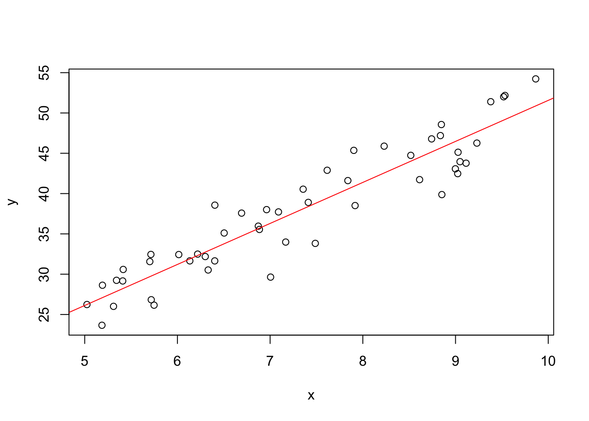
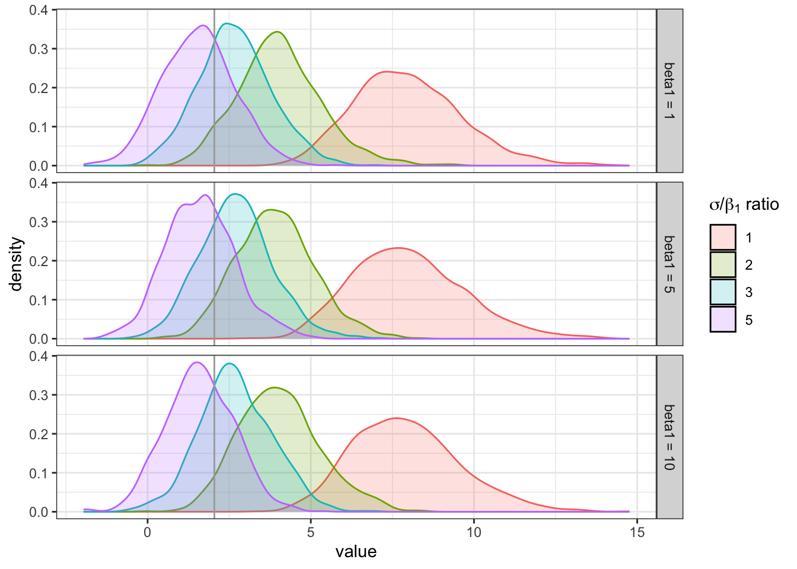
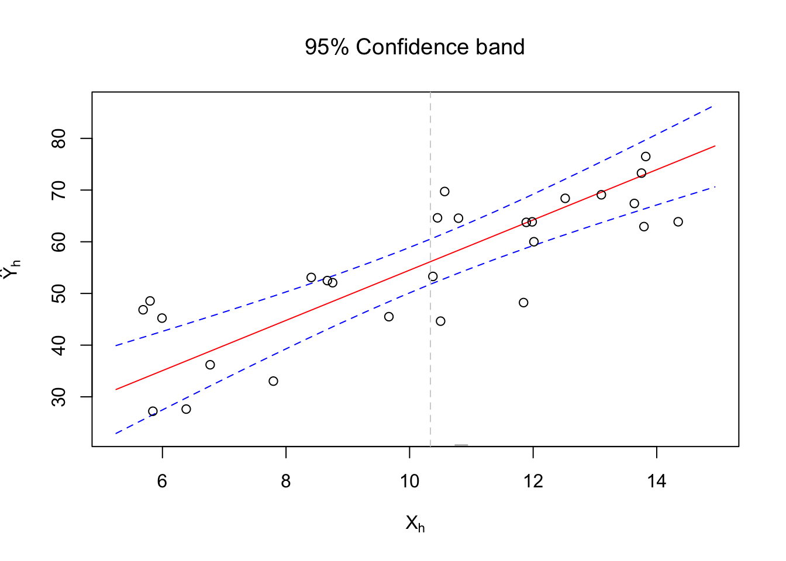

We often want to make inferences about \(\beta_1\). A common test on \(\beta_1\) has the form below.
If \(\beta_1 = 0\)\(\Longrightarrow\) Regression line in horizontal, which means there is no linear association between \(Y\) and \(X\), and even more no relation of any type because all probability distributions of \(Y\) are identical at all levels of \(X\): normal with \(E(Y) = \beta_0 + (0) X = \beta_0\) and variance \(\sigma^2\).
Refers to distribution of \(\hat{\beta}_1\) from repeated sampling when the levels of the predictor variable \(X\) are held constant from sample to sample.
Recall \(\displaystyle \hat{\beta}_1 = \frac{\sum(X_i - \bar{X})(Y_i - \bar{Y})}{\sum(X_i - \bar{X})^2}\); this is the point estimator.
Distribution of \(\hat{\beta}_1\) is Normal with mean and variance:
Then we can estimate the variance by replacing the parameter \(\sigma^2\) with \(MSE\), the unbiased estimator of \(\sigma^2\). This gives us \(S^2_{\hat{\beta}_1}\), which is an unbiased estimator for the variance of the sampling distribution of \(\hat{\beta}_1\). And we can take the positive square root to give us \(S_{\hat{\beta}_1}\), which is the point estimator of \(\sigma_{\hat{\beta}_1}\).
Thus, \(S^2_{\hat{\beta}_1}\) is an unbiased estimator for the variance of the sampling distribution of \(\hat{\beta}_1\) and
This is also called the standard error (another way to think about it is the standard deviation of the sampling distribution) → \(S_{\hat{\beta}_1} = SE(\hat{\beta}_1)\)
Main result for normal, mean and variance
\(\hat{\beta}_1\) can be written as a linear combination of the observations \(Y_i\):
\(\sum \text{Normal} \sim \text{Normal}\,\), so we know \(\hat{\beta}_1\) must be Normal. Then properties of the coefficients \(k_i\) can be used to show the mean and variance.
Note that \(k_i\)’s are fixed quantities because they are a function of only \(X_i\)’s (which are fixed quantities). Therefore, \(\hat{\beta}_1\) is a linear combination of \(Y_i\), where the coefficients are solely a function of the fixed \(X_i\) (this is why \(\hat{\beta}_1\) is a linear estimator).
Properties of coefficients \(k_i\):
Proof of linear combination:
Proofs of properties of \(k_i\):
Proof of mean:
Proof of variance:
Can also prove that \(\hat{\beta}_1\) has minimum variance among all unbiased linear estimators.
2.1.2 Sampling distribution of \((\hat{\beta}_1 - \beta_1) / S_{\hat{\beta}_1}\)
With < \(100(1 - \alpha)\) >% confidence, we estimate that the average < \(Y\) context > increases by between < lower bound > and < upper bound > for each additional unit increase in < \(X\) context >.
Remember the scope of the regression model is restricted to some range of values of the predictor variable → May not be reasonable to use these slope estimates outside this range as the regression relation may not be linear then.
# simulate sample dataset for normal error regression model# -> E ~ Normal(0, sigma^2)# -> Y = B0 + B1*X + E# -> Y | X ~ Normal(B0 + B1*X, sigma^2)# initialize items# -> sample size, population parameters and error variancen<-50beta_0<-2beta_1<-5sigma2<-10# generate X valuesx<-runif(n =n, min =5, max =10)# generate error termsepsilon<-rnorm(n =n, mean =0, sd =sqrt(sigma2))# calculate observations Y | X ~ Normal(B0 + B1*X, sigma^2)y<-beta_0+beta_1*x+epsilon# plot sample data with regression lineplot(x =x, y =y)abline(lm(formula =y~x), col ="red")

# display error termsx_plot<-seq(from =-3*sqrt(sigma2), to =3*sqrt(sigma2), by =0.01)hist(epsilon, freq =FALSE, xlab =bquote(epsilon*"~ Normal ("*mu*","*sigma^2*")"), main ="")lines(x =x_plot, y =dnorm(x =x_plot, mean =0, sd =sqrt(sigma2)))
# fit modelmod_normal<-lm(y~x)# display only coefficient summaries of slopesummary(mod_normal)$coefficients[2,]# Estimate is the middle of the interval
Estimate Std. Error
4.8802185802512321188828536833 0.2814969028549798024663175511
t value Pr(>|t|)
17.3366688256794034828089934308 0.0000000000000000000002660603
# calculate confidence interval for slopealpha<-0.05confint(mod_normal, parm ="x", level =1-alpha)
2.5 % 97.5 %
x 4.314231 5.446206
# using R functions to get the needed values (can reference how to calculate these manually above)# extract / calculate needed items# -> point estimate = beta1-hat# -> critical value = t_alpha/2, n-2# -> SE(beta1-hat) = MSE / S_XX = S / sqrt(S_XX)pe<-as.numeric(coef(mod_normal)["x"])# SIDENOTE -> as.numeric() just to remove the named number data typet_crit<-abs(qt(p =alpha/2, df =mod_normal$df.residual))s<-summary(mod_normal)$sigmas_xx<-sum((x-mean(x))^2)se_beta1_hat<-s/sqrt(s_xx)# compare to Std. Error from summary of model coefficientscompare(summary(mod_normal)$coefficients["x","Std. Error"], se_beta1_hat)
Reject \(H_0\) and conclude \(H_A\) if \(\hspace{10pt}\)\(TS \in RR \hspace{10pt} \Longleftrightarrow \hspace{10pt} p\text{-value} \le \alpha\)
Fail to reject \(H_0\) if \(\hspace{10pt}\)\(TS \notin RR \hspace{10pt} \Longleftrightarrow \hspace{10pt} p\text{-value} > \alpha\)
Can also look at the \(100(1 - \alpha)\%\) CI for \(\beta_1\) to see if contains 0.
Conclusion / Interpretation
At the \(\alpha\) significance level, we < have / do not have > sufficient evidence of a significant linear relationship between < \(Y\) context > and < \(X\) context >. < if yes… > This is a < positive / negative > linear relationship, indicating that as < \(X\) context > increases, < \(Y\) context > < increases / decreases >, on average.
# using same model from the confidence interval for beta1 demo# display model summary, focusing on coefficient summaries for slope# -> looking for t value (if doing traditional method test with RR) and Pr(>|t|) = p-valuesummary(mod_normal)# compare p-value to alpha
Call:
lm(formula = y ~ x)
Residuals:
Min 1Q Median 3Q Max
-7.6270 -1.5368 0.3604 2.5397 5.0039
Coefficients:
Estimate Std. Error t value Pr(>|t|)
(Intercept) 3.0959 2.1315 1.452 0.153
x 4.8802 0.2815 17.337 <0.0000000000000002 ***
---
Signif. codes: 0 '***' 0.001 '**' 0.01 '*' 0.05 '.' 0.1 ' ' 1
Residual standard error: 3.03 on 48 degrees of freedom
Multiple R-squared: 0.8623, Adjusted R-squared: 0.8594
F-statistic: 300.6 on 1 and 48 DF, p-value: < 0.00000000000000022
# calculate test statistic t* = beta1-hat / SE(beta1-hat)beta1_hat<-as.numeric(coef(mod_normal)[2])se_beta1_hat<-summary(mod_normal)$coefficients["x","Std. Error"]t_star<-beta1_hat/se_beta1_hat# compare to result from summary(lm())compare(summary(mod_normal)$coefficients["x","t value"], t_star)
Simulation to determine how the magnitude of \(\beta_1\) and \(\sigma\) affect the resulting significance of the \(X\) variable in SLR when simulating data. For example, suppose \(\beta_1 = 1a\) and \(\sigma = 3a\), where \(a = 1, 2, 3\). Is there the same resulting significance for all values of \(a\)?
# initialize simulation settings# -> first the parameters of interest (that are variable)# -> create all combos# -> add in the constant settings# -> arrange in a good order# -> add simulation id column# -> set row names equal to id (helps keep track of results later)params<-expand.grid(beta_1 =c(1,5,10), ratio =c(1:3,5))%>%mutate(sigma =beta_1*ratio)%>%mutate(n =30, beta_0 =2)%>%arrange(beta_1, ratio)%>%bind_cols(data.frame(sim_id =1:nrow(.)))rownames(params)<-paste0("sim", params$sim_id)# define function to run on each unique simulation settingrun_trial<-function(vec, vec_names, m=1000){# redefine arguments for easier reference# -> numeric values get coerced to character because of `model` data typenames(vec)=vec_namesn=as.numeric(vec["n"])beta_0=as.numeric(vec["beta_0"])beta_1=as.numeric(vec["beta_1"])beta_2=as.numeric(vec["beta_2"])sigma=as.numeric(vec["sigma"])sim_id=as.numeric(vec["sim_id"])# initialize results vectort=rep(NA, m)# loop to simulate m models and extract summariesfor(iin1:m){# generate datax=runif(n =n, min =5, max =10)y=rnorm(n =n, mean =beta_0+beta_1*x, sd =sigma)# fit modelmod=lm(y~x)# get summaries# -> just want t-statt[i]=summary(mod)$coefficients["x", "t value"]}return(cbind(t, sim_id =sim_id))}# define function to run simulation and format resultssimulation<-function(params, sim_function, iterations=100, format_results=FALSE){# run simulation for each parameter settings# -> have to transpose so that now each column is a parameter settings and convert to dataframe so can pass to map(), which needs a listresults_raw=params%>%t%>%data.frame%>%map(\(vec)sim_function(vec, vec_names =names(params), m =iterations), .progress =T)if(!format_results){return(results_raw)}else{# reformat results# -> convert each results matrix to a dataframe, then combine# -> attach the simulation settings to the results# -> pivot longer to have one column for the name of the summary measure and one for its value# -> convert parameters to factors for plotresults=results_raw%>%map(\(x)data.frame(x))%>%reduce(bind_rows)%>%left_join(params, by ="sim_id")%>%pivot_longer(cols =1:(ncol(results_raw[[1]])-1), names_to ="statistic", values_to ="value")%>%mutate(across(1:ncol(params), as.factor))return(results)}}# run simulationresults<-simulation(params =params, sim_function =run_trial, iterations =1000, format_results =TRUE)head(results)
# A tibble: 6 × 8
sim_id beta_1 ratio sigma n beta_0 statistic value
<fct> <fct> <fct> <fct> <fct> <fct> <chr> <dbl>
1 1 1 1 1 30 2 t 7.95
2 1 1 1 1 30 2 t 7.16
3 1 1 1 1 30 2 t 6.35
4 1 1 1 1 30 2 t 7.22
5 1 1 1 1 30 2 t 5.94
6 1 1 1 1 30 2 t 8.66
# create a plot facetted by beta value, with density curves for the sampling distributions of the t-stats for each value of the sigma / beta1 ratio# -> add reference line for significance cutoff# set more informative labels for the facetslabels_beta<-c("1"="beta1 = 1","5"="beta1 = 5","10"="beta1 = 10")ggplot()+geom_density(aes(x =value, group =ratio, color =ratio, fill =ratio), data =results, alpha =0.2)+geom_vline(aes(xintercept =t), data =data.frame(t =abs(qt(0.025, df =params[1,"n"]-1))), color ="darkgrey")+facet_grid(beta_1~., labeller =as_labeller(labels_beta))+guides( fill =guide_legend(bquote(sigma*"/"*beta[1]*" ratio")), color ="none")

Based on the sampling distributions, it appears that the relative magnitude is what is important. And if it is the same even for different values, then will get similar results.
2.2 Some considerations when making inferences
Effects of departures from normality:
If the probability distributions of \(Y\) are not exactly normal but do not depart seriously \(\Longrightarrow\) Sampling distribution of \(\hat{\beta_1}\)\(\approx\) normal \(\Longrightarrow\) Using the \(t\) distribution will provide \(\approx\)\((100 - \alpha)\%\) CIs and \(\alpha\)-level tests.
The estimator \(\hat{\beta_1}\) generally has the property of asymptotic normality (i.e. it’s distribution approaches normality under very general conditions as the sample size increases). So with a sufficiently large sample size, inference procedures are still valid even if distributions of \(Y\) have large departures from normality. Can switch from \(t\)-based procedures to \(Z\)-based with large \(n\).
Interpretation of confidence coefficient and risks of errors
Our regression model assumes that the \(X_i\) are known constants. So the confidence coefficient and risks of errors are interpreted with respect to taking repeated samples where the \(X\) observations are kept at the same levels as in the observed sample.
For example, confidence interval for \(\beta_1\) with confidence coefficient 95% → If many independent samples are taken where the levels of\(X\) are the same as in the dataset, approximately 95% of the constructed confidence intervals would capture the true value of \(\beta_1\).
Spacing of the \(X\) levels
For a given \(n\) and \(\sigma^2\), the variance of \(\hat{\beta_1}\) is affected by the spacing of the \(X\) levels in the observed data. As the spread in the \(X\) levels increases, \(S_{xx}\) increases and therefore \(V(\hat{\beta_1})\) decreases.
2.3 Interval estimation of \(E(Y_h)\)
Overview
A common objective is to estimate the mean of one or more probability distributions of \(Y\).
Setup
Let \(X_h\) = level of \(X\) that we wish to estimate the mean response for (may be a value which occurred in the sample, or some other value within the scope of the model).
Mean response when \(X = X_h\) is \(E(Y_h)\); this is what we are estimating.
Again, this refers to the different of \(\hat{Y_h}\) from repeated sampling when the levels of the predictor variable \(X\) are held constant from sample to sample.
Point estimator for \(E(Y_h)\) → \(\hat{Y_h} = \hat{\beta}_0 + \hat{\beta}_1 X_h\)
Distribution of \(\hat{Y_h}\) is Normal with mean and variance:
The variability of the sampling distribution of \(Y_h\) is affected by how far \(X_h\) is from \(\bar{X}\) (from the numerator of second term in \(V(\hat{Y_h})\)) \(\Longrightarrow\)\(V(\hat{Y_h})\) increases the further \(X_h\) is from \(\bar{X}\).
Intuitive / visual explanation of this affect
In the picture below, two regression lines are assumed to go through the same \((\bar{X}, \bar{Y})\) point to isolate the effect of variation in the estimated slope \(\hat{\beta}_1\) from sample to sample.
We see the difference between estimated responses is much smaller when \(X\) is near the mean \(\bar{X}\). So the variation in slope from sample to sample has a much more pronounced effect for \(X\) levels far from the mean.
When \(X_h = 0\)\(\Longrightarrow\)\(V(\hat{Y_h})\) reduces to \(V(\hat{\beta}_0)\) (likewise for the estimated variances). This is because when \(X_h = 0\), \(\hat{Y_h} = \hat{\beta}_0 + \hat{\beta}_1 (0) = \hat{\beta}_0\).
2.3.2 Sampling distribution of \((\hat{Y_h} - E(Y_h)) / S_{\hat{Y_h}}\)
Interpretation → With < \(1 - \alpha\) >% confidence, we estimate that the true mean value of < \(Y\) context > for all individuals with an < \(X\) context > of < \(X_h\) > to be between < lower bound > and < upper bound >.
Notes
Interpretations → Same interpretation rules about repeated sampling for constant \(X\) levels (because \(X_i\) are known constants in the regression model).
Confidence interval width is the smallest when \(X_h = \bar{X}\) (assuming everything else remains equal).
Design of experiments → Thus in an experiment to estimate the mean response at a particular level \(X_h\), the precision of the estimate will be best if (everything else remaining equal) the observations on \(X\) are spaced so that \(\bar{X} = X_h\).
Tests → Can use the CI to perform a two-sided test as well.
Robust → Confidence limits shown here for \(\hat{Y_h}\) are not sensitive to moderate departures from the assumption that the error terms are normally distributed. If there is substantial departures from normality, still not sensitive if large \(n\); this robustness comes from robustness of CIs for \(\beta_0\) and \(\beta_1\).
Can also think of these CIs as robust because they are only concerned with the center (location) of the distribution of \(Y_h\).
Multiple intervals → ** CIs apply when a estimating a single mean response from the study. Will show later how to adjust when estimating several mean responses. **
# simulate sample dataset for normal error regression model# initialize items# -> sample size, population parameters and error variancen<-30beta_0<-2beta_1<-5sigma<-10# generate X valuesx<-runif(n =n, min =5, max =15)# generate response Y | X ~ Normal(B0 + B1*X, sigma^2)# -> specify the conditional means and then incorporate the random error# -> rnorm() can take a vector of means and iterates through them# --> if there n > length(means), then the means get recycled from the starty<-rnorm(n =n, mean =beta_0+beta_1*x, sd =sigma)
# fit modelmod<-lm(y~x)# specify new X level (X range is 5 - 15)# -> newdata frame should have columns with same name as data for the modelx_h<-data.frame(x =12)# calculate just the point estimate of estimated E(Y_h)# -> technically using the predict() function for class lm(), so just calling predict() is masking predict.lm() --> other classes like predict.glm() have slightly different argument options# -> by default predict() returns the fits (regression line) for all of the obs (X values) used in the model fit, can specify new data points with newdata = < data_frame >predict(mod, newdata =x_h)
1
62.01871
# calculate lower and upper bounds of interval estimate for E(Y_h)# -> by default does 95% CI and returns the point estimate (fit) as wellpredict(mod, newdata =x_h, interval ="confidence", level =0.95)
fit lwr upr
1 62.01871 57.52838 66.50904
# show items related to standard error of estimation se(Y_h-hat)# -> residual.scale = S = sqrt(MSE)predict(mod, newdata =x_h, se.fit =TRUE)
# alternate way from ALSM package# -> this is the package that goes with the textbook; provides some functions that are nowhere else, and some alternatives to common functions# --> the implementation of this function is essentially what is done in the "manual" section# --> type = "m" gives CI for mean observation; by default does CL of 95%, but specifies alpha# -> SIDENOTE -> formatting: original result is a dataframe which displays poorly, so convert to matrixALSM::ci.reg(mod, newdata =x_h, type ="m", alpha =0.05)%>%as.matrix
x Fit Lower.Band Upper.Band
1 12 62.01871 57.52838 66.50904
# calculate point estimate using estimated coefficients# -> hat(Y_h) = hat(beta_0) + hat(beta_1) X_hb<-as.numeric(coef(mod))pe<-b[1]+b[2]*as.numeric(x_h)# calculate critical value# -> use lower.tail = FALSE to get the positive version of t_alpha/2alpha<-0.05t_crit<-qt(p =alpha/2, df =df.residual(mod), lower.tail =FALSE)# calculate se(Y_h-hat) = MSE (1/n (X_h - X-bar)^2 / S_XX) %>% sqrt OR S * sqrt(1/n + S_XX)n<-length(x)x_bar<-mean(x)s_xx<-sum((x-x_bar)^2)mse<-(summary(mod)$sigma)^2mse<-predict(mod, newdata =x_h, se.fit =TRUE)$residual.scalese_yh_hat<-sqrt(mse*(1/n+(as.numeric(x_h)-x_bar)^2/s_xx))se_yh_hat<-summary(mod)$sigma*sqrt((1/n+(as.numeric(x_h)-x_bar)^2/s_xx))# calculate CI for E(Y_h)ci_limits<-c(lower =pe-t_crit*se_yh_hat, upper =pe+t_crit*se_yh_hat)# compare results to predict(lm(), type = "confidence")# -> Y_h-hat and interval boundscompare(predict(mod, newdata =x_h, interval ="confidence"), c("point estimate"=pe, ci_limits))
$comparison
$comparison$result
[1] FALSE
$comparison$description
[1] "Attributes: < names for target but not for current >"
[2] "Attributes: < Length mismatch: comparison on first 0 components >"
[3] "target is matrix, current is numeric"
$comparison$`element-wise`
NULL
$`predict(mod, newdata = x_h, interval = "confidence")`
fit lwr upr
1 62.01871 57.52838 66.50904
$`c(`point estimate` = pe, ci_limits)`
point estimate lower upper
62.01871 57.52838 66.50904
# -> se of estimation# --> by default predict uses s = sqrt(mse) = residual standard error to get the se.fit (and the df as well = df.residual(mod)) ---> assumes future obs have same error variance as originals used for fitting# --> can specify a different variance to use for future obs with pred.var if desiredcompare(predict(mod, newdata =x_h, se.fit =TRUE)$se.fit, se_yh_hat)
# can return fit, bounds, and standard error info from predict using type = "terms"predict(mod, newdata =x_h, type ="terms", interval ="conf")
$fit
x
1 9.209492
attr(,"constant")
[1] 52.80922
$se.fit
x
1 1.242609
$lwr
x
1 6.664123
attr(,"constant")
[1] 52.80922
$upr
x
1 11.75486
attr(,"constant")
[1] 52.80922
$df
[1] 28
$residual.scale
[1] 9.891293
# -> for the fit and bounds, for some reason this actually uses the alternate regression model -> Y_h-hat = bar(y) + beta_1-hat (X_h - bar(x))# -> results: constant = beta_1-hat (X_h - X-bar) and attr = Y-bar# -> same process to get upper and lower too, add to Y-bar(x_star<-predict(mod, newdata =x_h, type ="terms"))
# compare width of confidence intervals at two X levels# specify new X levels (X range is 5 - 15)# -> optimal width will be at X = X-barx_h_mean<-data.frame(x =mean(x))x_h2<-data.frame(x =8)# calculate width of intervalspredict(mod, newdata =x_h_mean, interval ="confidence")[2:3]%>%diff
Goal → Predict a new observation \(Y\) for a given \(X\) value. This new observation is viewed as the result of a new trial, independent of the trials the model is based on.
Setup
Again, \(X_h\) is the \(X\) level for the new trial. Still assuming the underlying regression model is appropriate for the new observation.
The new observation on \(Y\) is \(Y_{h(new)}\); this is what we are estimating.
Distinction between (1) estimation of the mean response \(E(Y_h)\) and (2) prediction of a new response \(Y_{h(new)}\)
We estimate the mean of the distribution of \(Y\).
We predict an individual outcome drawn from the distribution of \(Y\). Obviously, most outcomes deviate from the mean response; so this must be taken into account when predicting \(Y_{h(new)}\).
Prediction has extra variability \(\Longrightarrow\) Less precision.
2.4.1 Prediction interval for \(Y_{h(new)}\) when parameters are known
Demonstration of prediction intervals
For a simple example, assume the relevant parameters of the regression model are known:
If we have a new observation with \(X_h = 3.425\) → \(E(Y_h) = 0.10 + 0.95 (3.5) = 3.425\) (so we know the center of the normal distribution of \(Y_h\)). Thus, using the empirical rule we have the following prediction interval:
Choose a range in the distribution of \(Y\) where most of the observations will fall and then declare that the next observation will fall in this range.
The usefulness of the prediction interval depends on the width of the interval and the needs for precision by the user.
Generalizing for this simple scenario
When the regression parameters of normal error regression model are known:
\[
100(1 - \alpha)\% \text{ PI for } Y_{h(new)} = E(Y_h) \pm z_{\alpha / 2} \cdot \sigma
\]
Centering the limits around \(E(Y_h)\) results in the narrowest interval consistent with the specified probability of a correct prediction.
2.4.2 Prediction interval for \(Y_{h(new)}\) when parameters are unknown
Overview and demo
When the regression parameters are unknown, they must be estimated.
The mean of the distribution of \(Y\) is estimated by \(\hat{Y_h}\) as usual, and the variance of the distribution of \(Y\) is estimated with \(MSE\).
However, we cannot simply use the previous PI with the parameters replaced by the corresponding point estimators. Here’s a demo of why:
The picture below shows two possible probability distributions of \(Y\), corresponding to the lower and upper limits of a CI for \(E(Y_h)\). In other words, the distribution of \(Y\) could be located as far left as the one shown, as far right as the other one shown, or anywhere in between.
Results
Since we do not know the mean \(E(Y_h)\) and only estimate it by a confidence interval, we cannot be certain of the location of the distribution of \(Y\).
Because of this uncertainty, PIs for \(Y_{h(new)}\) clearly must take into account two elements:
Variation in possible location of the distribution of \(Y\).
Variation within the probability distribution of \(Y\).
Prediction interval for \(Y_{h(new)}\)
Sampling distribution
Note that this studentized statistic uses the point estimator \(\hat{Y_h}\) in the numerator rather than the true mean \(E(Y_h)\) because the true mean is unknown and cannot be used in making a prediction.
For \(E(Y_h)\) CIs shown earlier, we used \([\hat{Y_h} - E(Y_h)] / S_{\hat{Y_h}}\), which was okay because the only unknown was \(E(Y_h)\) and it is what we are estimating. But now there are two layers of uncertainty (variability). So the reference value in the numerator is also an estimate, not the true value.
Interpretation → With < \(1-\alpha\) >% confidence, we predict that the true value of < \(Y\) context > for a single (or the next) < \(X\) context > of < \(X_h\) > to be between < lower bound > and < upper bound >.
\[
100(1 - \alpha)\% \text{ PI for } Y_{h(new)} = \hat{Y_h} \pm t_{\alpha/2, n-2} \cdot S_{pred}
\]
Standard deviation of prediction \(\sigma^2_{pred}\)
The numerator of the studentized statistic represents how far the new observation will deviate from the estimated mean (based on the original \(n\) cases in the study). This difference can be viewed as the prediction error, with \(\hat{Y_h}\) serving as the best point estimate of the value of the new observation \(Y_{h(new)}\).
We can easily find the variance of this difference (because of independence of the new \(Y_{h(new)}\) and original \(n\) cases on which \(\hat{Y_h}\) is based).
Interpretation → Again, the confidence coefficient refers to taking repeated samples based on the same set of \(X\) values, and calculating prediction limits for \(Y_{h(new)}\) for each sample.
Precision → PI width is the smallest when \(X_h = \bar{X}\) (assuming everything else remains equal).
One interval → PIs apply for a single prediction based on the sample data.
Not robust → PIs (unlike CIs for the mean response) are sensitive to departures from normality of the error terms distribution. Can think of this non-robustness a result of having to take into account the center of the distribution of \(Y_h\) (just like with CIs) AND also the tails (spread) of the distribution.
Precision → Even if PIs are too wide for useful predictions, they can still be informative for control / modelling purposes, specifically the estimated variance of prediction.
\(S^2_{pred} = MSE + S^2_{\hat{Y_h}} \hspace{10pt}\) has two pieces: (1) \(MSE\) measures \(X\)-to-\(X\) variation within the probability distribution for \(Y\) (different response values for observations with same \(X\) level) and (2) \(S^2_{\hat{Y_h}}\) measures sample-to-sample variation (mean response of samples with overall same \(X\) levels).
So if \(MSE\) is very large compared to \(S^2_{\hat{Y_h}}\), e.g. \(\frac{MSE}{S^2_{pred}} \ge 0.8 \text{ or } 0.9\), then the majority of the variation is from sample-to-sample. This could reflect other factors that aren’t being taken into account by the model. So perhaps a multiple linear regression model should be used, which could result in more useful predictions. NOT SURE HOW THIS WORKS
Estimation vs Prediction
Location → For a particular \(X_h\), CIs and PIs have the same point estimate \(\hat{Y_h}\), which is the estimate of the mean \(E(Y_h)\).
Precision
The difference between CIs and PIs then lies in the relative accuracy of the interval.
CIs are narrower than PIs at the same \(X_h\).
The only way to obtain more accurate prediction for a new value of \(Y\) is to reduce the standard deviation of the regression model. This can be accomplished by using a curvilinear model, adding new independent variables, etc. or by collecting more data (width of both intervals decrease when the sample size increases).
Conceptual difference → CIs resemble PIs, except: A CI represents an inference on a parameter and is an interval that is intended to cover the value of the parameter; and a PI is a statement about the value to be taken by a random variable, the new observation \(Y_{h(new)}\).
# using the same model as the confidence interval for E(Y_h) demo# calculate just the point estimate of predicted Y_h(new)# -> this is the same as the PE for a CI of E(Y_h) predict(mod, newdata =x_h)
1
62.01871
# calculate lower and upper bounds of prediction interval Y_h(new)# -> by default does 95% CI and returns the point estimate (fit) as wellpredict(mod, newdata =x_h, interval ="prediction")
# show items related to standard error of ESTIMATION se(Y_h-hat)# -> ALWAYS returns this, even if specify interval = "pred"...# --> suppose it implicitly adds the extra MSE term (from residual.scale) to get the prediction lwr and uprpredict(mod, newdata =x_h, se.fit =TRUE)
# alternative way using ALSM# -> type = "n" gives PI for single new observationALSM::ci.reg(mod, newdata =x_h, type ="n")%>%as.matrix
x Fit Lower.Band Upper.Band
1 12 62.01871 41.2657 82.77171
# calculate point estimate and critical value# -> same as for confidence intervalb<-as.numeric(coef(mod))pe<-b[1]+b[2]*as.numeric(x_h)alpha<-0.05t_crit<-qt(p =alpha/2, df =df.residual(mod), lower.tail =FALSE)# calculate standard error in prediction se(pred) = sqrt(MSE + var(Y-h-hat))# -> save se(estimation = fit), shown earlier, then have to add in the extra MSE termse_fit<-predict(mod, newdata =x_h, se.fit =TRUE)$se.fitse_pred<-sqrt(summary(mod)$sigma^2+se_fit^2)se_pred<-sqrt(summary(mod)$sigma^2+se_fit^2)# OR calculate se(pred) using expanded formula se(pred) = MSE * (1 + 1/n (X_h - X-bar)^2 / S_XX) %>% sqrt OR s * sqrt(...)n<-length(x)x_bar<-mean(x)s_xx<-sum((x-x_bar)^2)s<-(summary(mod)$sigma)se_pred<-s*sqrt((1+1/n+(as.numeric(x_h)-x_bar)^2/s_xx))# calculate PI for Y_h(new)pi_limits<-c(lower =pe-t_crit*se_pred, upper =pe+t_crit*se_pred)# compare results to predict(lm(), type = "prediction)# -> Y_h-hat and interval boundscompare(predict(mod, newdata =x_h, interval ="prediction"), c("point estimate"=pe, pi_limits))
$comparison
$comparison$result
[1] FALSE
$comparison$description
[1] "Attributes: < names for target but not for current >"
[2] "Attributes: < Length mismatch: comparison on first 0 components >"
[3] "target is matrix, current is numeric"
$comparison$`element-wise`
NULL
$`predict(mod, newdata = x_h, interval = "prediction")`
fit lwr upr
1 62.01871 41.2657 82.77171
$`c(`point estimate` = pe, pi_limits)`
point estimate lower upper
62.01871 41.26570 82.77171
# compare width of prediction intervals at two X levels# specify new X levels (X range is 5 - 15)# -> optimal width will again be at X = X-barx_h_mean<-data.frame(x =mean(x))x_h2<-data.frame(x =8)# calculate width of intervalspredict(mod, newdata =x_h_mean, interval ="prediction")[2:3]%>%diff
Variance of the distribution mean of \(m\) observations from the probability distrubtion of \(Y\) at \(X = X_h\) → \(\sigma^2 / m\)
Variance of the sampling distribution of \(\hat{Y_h}\) → \(\sigma^2_{\hat{Y_h}}\)
Notes
Interpretation → With < \(1 - \alpha\) >% confidence, we predict that the true value of < \(Y\) context > for < \(m\) > < \(X\) context > of < \(X_h\) > to be between < lower bound > and < upper bound >.
Interval still has the same center as when estimating \(E(Y_h)\) and predicting a single \(Y_{h(new)}\).
This prediction interval is narrower than when predicting for a single observation (because it involves the prediction of the mean for a group), but still wider than the confidence interval.
We can then obtain the prediction interval for the total of the \(m\) observations by multiplying each limit by \(m\).
# using the same model as the confidence interval for E(Y_h) demo# calculate the predicted mean for m observations of Y_h(new)# -> type = "nm" is gives PR for mean of m new observations at X_hALSM::ci.reg(mod, newdata =x_h, type ="nm")%>%as.matrix
x Fit Lower.Band Upper.Band
1 12 62.01871 41.2657 82.77171
# set number of observations to predict at X_hm<-4# calculate just the point estimate of predicted Y-bar_h(new) and critical value# -> PE is the same as previous CI and PIpe<-as.numeric(predict(mod, newdata =x_h))alpha<-0.05t_crit<-qt(p =alpha/2, df =df.residual(mod), lower.tail =FALSE)# calculate standard error in prediction se(pred) = sqrt(MSE / m + var(Y-h-hat))# -> save se(fit), shown earlier, then have to add in the extra MSE / m termse_fit<-predict(mod, newdata =x_h, se.fit =TRUE)$se.fitse_pred<-sqrt(summary(mod)$sigma^2/m+se_fit^2)# calculate PI for Y-bar_h(new)(pi_limits<-c(lower =pe-t_crit*se_pred, upper =pe+t_crit*se_pred))
lower upper
50.93746 73.09996
# compare to (widths) of previous types of intervals# -> order from most to least precise: CI for E(Y_h), PI for Y-bar_h(new), PI for single Y_h-hatpredict(mod, newdata =x_h, interval ="conf")
# interval for sum (total) of m predictions at X_h# -> depends on context if this is meaningfulpi_limits*m
lower upper
203.7498 292.3998
2.5 Confidence band for regression line
Overview
The goal is to obtain a confidence band for the entire regression line \(E(Y) = \beta_0 + \beta_1 X\).
This band enables us to see the region in which the entire regression line lies and is particularly useful for determining the appropriateness of a fitted regression function.
Results
This confidence band formula below the same form as the CI formula for \(E(Y_h)\), the mean response at \(X_h\) (\(\hat{Y_h} \pm t_{\alpha/2, n-2} \cdot S_{\hat{Y_h}}\)), except it uses a different multiplier to adjust for multiple comparisons \(\Longrightarrow\) Same point estimate and standard error.
Some alternative procedures for developing confidence bands have been developed.
The one shown below is the Working-Hotelling confidence band (more will be said about this method later).
The simplicity of this method is that it is a direct extension of the confidence limits for a single mean response \(E(Y_h)\) shown earlier.
The \(100(1 - \alpha)\%\) confidence band for the regression line has boundaries at any level \(X_h\):
\[
\hat{Y_h} \pm W \cdot S_{\hat{Y_h}} = \hat{Y_h} \pm W \cdot \sqrt{MSE \bigg[\frac{1}{n} + \frac{(X_h - \bar{X})^2}{\sum(X_i - \bar{X})^2}\bigg]}
\]
(Initial steps of deriving CI) → We are finding the two values such that \(P(\text{lower} \le \beta_0 + \beta_1 X_h \le \text{upper}) = 1- \alpha\); And \(\hat{Y_h}\) is the point estimator for \(E(Y_h) = \beta_0 + \beta_1 X_h\).
\(W\) multiplier
\[
W^2 = 2 \cdot F_{(1-\alpha; \, 2, n-2)}
\]
We multiply by two for SLR becuase there are two estimated coefficients.
The \(W\)-multiplier is larger than the \(t\) multiplier because the confidence band must encompass the entire regression line, whereas the confidence limits for \(E(Y_h)\) at \(X_h\) apply only at the single level \(X_h\).
Notes
Confidence band confidence level
Interpretation → Indicates the proportion of time that the estimating procedure will yield a band that covers the entire line, in a long series of samples in which the \(X\) observations are kept at the same level as in the actual study.
Technical application → The confidence band applies to the entire regression line over all real-numbered values of \(X\) from \(-\infty\) to \(\infty\).
Practical application → In practice, the confidence band is ignored for that part of the regression line which is not of interest, so the confidence coefficient for this limited segment is somewhat higher than \(1-\alpha\). Thus, \(1-\alpha\) serves as a lower bound to the confidence coefficient.
Things to look for → Can see if the slope is clearly positive or negative, can look at the levels of the regression line at different levels of \(X\) to gauge relative precision, etc.
Precision
With the somewhat wider limits for the entire regression line, we are able to draw conclusions about any and all mean responses for the entire regression line and not just about the mean response at a given \(X\) level.
Although, generally confidence band lines at any value \(X_h\) often are not substantially wider than the confidence limits for the mean response at that single \(X_h\) level.
Just like with the CI for \(E(Y_h)\), the boundary points of the confidence band for the regression line are wider apart the further \(X_h\) is from the mean \(\bar{X}\) of the \(X\) observations.
Formula → The lower and upper bounds together actually define a hyperbola.
# using the same model as the confidence interval for E(Y_h) demo# calculate confidence band limits across scope of model# -> initialize many x_h values covering min to max of original samplex_h<-data.frame(x =seq(from =min(x), to =max(x), length =20))# calculate confidence bands# -> type = "w" uses the Working-Hotelling method with the W multiplierconf_band<-ALSM::ci.reg(mod, newdata =x_h, type ="w", alpha =0.05)# display resultskable(conf_band[1:5,], format ="html", digits =3)%>%kable_styling(full_width =FALSE, position ="left")
x
Fit
Lower.Band
Upper.Band
5.726
29.039
19.525
38.553
6.204
31.553
22.793
40.313
6.683
34.067
26.035
42.099
7.161
36.581
29.245
43.917
7.639
39.095
32.412
45.778
# compare width when estimating a single E(X_h) to the confidence bandsc(x_h[1,], predict(mod, newdata =data.frame(x =x_h[1,]), interval ="conf"))%>%set_names(c("x", "fit", "lwr", "upr"))
x fit lwr upr
5.725945 29.038858 21.499221 36.578496
# plot fitted line and confidence bands on scatterplot# -> also add reference line for X-bar showing where the most precision isconf_band%$%matplot(x =x, y =cbind(Fit, Lower.Band, Upper.Band), type ="l", lty =c(1,2,2), col =c("red", "blue", "blue"), xlab =expression(X[h]), ylab =expression(hat(Y)[h]), main =bquote(.(100*(1-alpha))*"% Confidence band"))points(x, y)abline(v =mean(x), lty =2, col ="lightgrey")text(x =mean(x)+0.5, y =min(y)+1, labels =expression(bar(X)) , col ="darkgrey")

# calculate W multiplier = 2 F_crit(regression = of coefficients, residual)# degrees of freedom# -> numerator -> = df regression (# of coefficients) = 2 for SLR# -> denominator -> df residual (n - # of coefficients) = n - 2 for SLR# probability -> F is right-tailed, so need to use 1 - alpha now# -> no dividing by two or taking absolute valuealpha<-0.05(W<-sqrt(2*qf(1-alpha, df1 =length(coef(mod)), df2 =df.residual(mod))))
[1] 2.584719
# compare W to t at a specific X_habs(qt(alpha/2, df =df.residual(mod)))
[1] 2.048407
# calculate confidence bands# -> use seq of x values from before# -> get the fits and se(estimation) for each new x# -> calculate lower and upper confidence band limits = Y_h-hat +- W * se(estimation)fit<-as.numeric(predict(mod, newdata =x_h))se_fit<-predict(mod, newdata =x_h, se.fit =TRUE)$se.fitlower<-fit-W*se_fitupper<-fit+W*se_fit# combine above infodata_conf_band<-data.frame(x_h =x_h$x, fit, se_fit, lower, upper, width =upper-lower)# illustrate process of confidence bands over X rangedata_conf_band%>%display_nice(col.names =c("X_h", "fit = Y_h-hat", "SE(fit) = S_{Y_h-hat}", "LB = Y_h-hat - W x S_{Y_h-hat}", "UB = Y_h-hat + W x S_{Y_h-hat}", "Width"))
X_h
fit = Y_h-hat
SE(fit) = S_{Y_h-hat}
LB = Y_h-hat - W x S_{Y_h-hat}
UB = Y_h-hat + W x S_{Y_h-hat}
Width
5.726
29.039
3.681
19.525
38.553
19.027
6.204
31.553
3.389
22.793
40.313
17.520
6.683
34.067
3.107
26.035
42.099
16.064
7.161
36.581
2.838
29.245
43.917
14.672
7.639
39.095
2.586
32.412
45.778
13.366
8.117
41.609
2.355
35.523
47.696
12.173
8.596
44.124
2.153
38.559
49.688
11.129
9.074
46.638
1.989
41.498
51.778
10.280
9.552
49.152
1.872
44.313
53.991
9.678
10.030
51.666
1.812
46.981
56.351
9.369
# compare results to ci.reg(type = "w)compare(head(ALSM::ci.reg(mod, newdata =x_h, type ="w", alpha =0.05)), head(data_conf_band[,c(1,2,4,5)]))
# demo to verify what geom_smooth() gives# results# -> lm regression lines line up as expected, BUT...# -> the confidence bands using se = TRUE are actually the lower and upper **pointwise** confidence interval around the mean# -> ** this means it is plotting ALL of the INDIVIDUAL CIs for E(Y_h), whereas Working-Hotelling confidence bands represent a confidence "interval" for the ENTIRE regression line# create dataframe of original observations the model was built ondata_original<-data.frame(x, y)# set t multiplier for making single interval estimates of E(Y_h)t_crit<-abs(qt(alpha/2, df =df.residual(mod)))# create confidence band demo plotting dataset# -> rename current lower and upper to have an indication of W multiplier# -> calculate new lower and upper bounds based on t multiplier# -> remove unneeded columns for plot# -> reshaoe to long with to long with and columns for type of bound and value# -> create indicator variable for type of multiplier used in calculating the lower and upper bounds (check what suffix is of bound) and then remove multiplier indication from bound column (just take off suffix)data_conf_band_plot<-data_conf_band%>%rename(lower_w =lower, upper_w =upper)%>%mutate(lower_t =fit-t_crit*se_fit, upper_t =fit+t_crit*se_fit)%>%select(-c(width, se_fit))%>%pivot_longer(cols =starts_with(c("lower", "upper")), names_to ="bound", values_to ="value")%>%mutate(multiplier =case_when(str_sub(bound, start =-1)=="t"~"t",TRUE~"W"), bound =str_sub(bound, end =-3))# create demo plot# layer: geom_smooth()# -> this adds regression line# -> se + TRUE adds the shaded ribbon representing "confidence bands"# layer: geom_line() first one# -> add manually calculated regression line, should line up exactly with above# layer: geom_line() second and third ones# -> confidence bands for both multipliersggplot()+geom_smooth(aes(x =x, y =y), data =data_original, method ="lm", formula =y~x, level =1-alpha, se =TRUE, color ="yellow", linewidth =1, alpha =0.5)+geom_line(aes(x =x_h, y =fit), data =data_conf_band_plot, color ="red", linewidth =0.5)+geom_line(aes(x =x_h, y =value, color =multiplier), data =filter(data_conf_band_plot, bound=="lower"), linetype =2)+geom_line(aes(x =x_h, y =value, color =multiplier), data =filter(data_conf_band_plot, bound=="upper"), linetype =2)+scale_color_manual(name ="Multiplier", values =c(t ="purple", W ="blue"))+labs(title ="Demo of confidence bands", x =expression(X[h]), y =expression(hat(Y)[h]))
Where the multipliers are \(t_{\alpha / 2, n - p}\) and \(W = 2 \cdot F_{1 - \alpha; p, n - p}\).
Demo to verify confidence bands and prediction bands from predict().
# create two datasets of should be equivalent confidence limits (from different functions)data_bands_plot1<-predict(mod, newdata =x_h, interval ="conf")%>%data.frame()%>%mutate(fun ="pred")%>%bind_rows(ALSM::ci.reg(mod, newdata =x_h, type ="m")%>%data.frame%>%mutate(fun ="ci.reg")%>%select(fit =Fit, lwr =Lower.Band, upr =Upper.Band, fun))%>%bind_cols(bind_rows(x_h, x_h), .)ggplot(data =data_bands_plot1)+geom_line(aes(x =x, y =fit))+geom_line(aes(x =x, y =lwr, color =fun, linetype =fun))+geom_line(aes(x =x, y =upr, color =fun, linetype =fun))
# SAME# try again for predictions# create two datasets of should be equivalent prediction limits (from different functions)data_bands_plot2<-predict(mod, newdata =x_h, interval ="pred")%>%data.frame()%>%mutate(fun ="pred")%>%bind_rows(ALSM::ci.reg(mod, newdata =x_h, type ="n")%>%data.frame%>%mutate(fun ="ci.reg")%>%select(fit =Fit, lwr =Lower.Band, upr =Upper.Band, fun))%>%bind_cols(bind_rows(x_h, x_h), .)ggplot(data =data_bands_plot2)+geom_line(aes(x =x, y =fit))+geom_line(aes(x =x, y =lwr, color =fun, linetype =fun))+geom_line(aes(x =x, y =upr, color =fun, linetype =fun))
# SAME
So can just use predict() with dataset spread over range of predictor to form pointwise confidence / prediction bands. Assuming this is still valid because limits of the confidence band for the regression line at any value \(X_h\) are not substantially wider than the confidence limits for the mean response at that single\(X_h\) level.
# create dataset of both pointwise confidence and prediction limitsconfs<-predict(mod, newdata =x_h, interval ="conf")preds<-predict(mod, newdata =x_h, interval ="pred")plot(x =data_original$x, y =data_original$y, type ="p")lines(x =x_h$x, y =confs[,"fit"], type ="l", col ="grey")lines(x =x_h$x, y =confs[,"lwr"], type ="l", col ="green")lines(x =x_h$x, y =confs[,"upr"], type ="l", col ="green")lines(x =x_h$x, y =preds[,"lwr"], type ="l", col ="blue")lines(x =x_h$x, y =preds[,"upr"], type ="l", col ="blue")
2.6 Analysis of variance approach to regression
This approach is very useful for multiple linear regression and other types of linear statistical models.
2.6.1 Partitioning of total sum of squares
Overview
In a regression setting, analysis of variance (ANOVA) allows us to capture the different sources of variability in the model.
We do this by partitioning the sums of squares and degrees of freedom associated with the the response variable \(Y\).
Types of sum of squares
Total sum of squares → Measured in terms of the deviations of the \(Y_i\) around their mean \(\bar{Y}\).
\[
SSTO = \sum (Y_i - \bar{Y})^2 = S_{YY}
\]
Measures the total variation of \(Y\), which tells us the uncertainty related to \(Y\) when the predictor variable \(X\) is not taken into account.
If all observations are the same, then \(SSTO = 0\). More variation in \(Y_i\), the larger \(SSTO\) is.
Sum of squares error → Measured in terms of the deviations of the \(Y_i\) around the fitted regression line \(\hat{Y_i}\) (i.e. the residuals \(e_i\)).
\[
SSE = \sum (Y_i - \hat{Y_i})^2
\]
Measures the remaining variation / uncertainty in the \(Y_i\)’s after we utilize the predictor variable \(X\) (i.e. “unexplained” variation).
If all observations fall on the fitted line, \(SSE = 0\). More variation in \(Y\) around the fitted line, the larger \(SSE\) is.
Sum of squares regression → Measured in terms of the deviations of the fitted \(\hat{Y_i}\) around their mean \(\bar{Y}\).
\[
SSR = \sum (\hat{Y_i} - \bar{Y})^2
\]
Measures the variation in the \(Y_i\)’s that is associated with the regression line.
In other words, it measures the variation in the \(Y_i\)’s that is accounted for by the relationship between \(Y\) and \(X\) (i.e. “explained” variation). We are essentially upgrading our original prediction for \(Y\) from \(\bar{Y}\) to now \(\hat{Y}\); so this \(\approx\) (conceptually) measures how much better the predictions become.
So, the larger \(SSR\) is in relation to \(SSTO\), the greater is the effect of the regression relation in accounting for the total variation in the \(Y_i\) observations.
The formulas for \(SSTO\), \(SSE\) and \(SSR\) above are best for computations. But an alternate form of \(SSR\) is useful for deriving analytical results is shown below:
\(SSTO\) → Has \(n-1\) degrees of freedom associated with it.
One degree of freedom is lost because the deviations \(Y_i - \bar{Y}\) are subject to one constraint: they must sum to zero (\(\sum (Y_i - \bar{Y}) = 0\)).
Equivalently, one degree of freedom is lost because the sample mean \(\bar{Y}\) is used to estimate the population mean.
\(SSE\) → Has \(n-2\) degrees of freedom associated with it.
Two degrees of freedom are lost because the two parameters \(\beta_0\) and \(\beta_1\) are estimated in obtaining the fitted values \(\hat{Y_i}\).
\(SSR\) → Has 1 degrees of freedom associated with it.
Although there are \(n\) deviations \(\hat{Y_i} - \bar{Y}\), all fitted values are calculated from the same estimated regression line. So the regression line just has two degrees of freedom (corresponding to the slope and intercept, for SLR \(p = 2\))…
BUT then, one degree of freedom is lost because again we have to estimate the mean in order to calculate \(\sum (\hat{Y_i} - \bar{Y})^2\), thus \(p - 1\)\(\Longleftrightarrow\) the deviations \(\hat{Y_i} - \bar{Y}\) are subject to one constraint: they must sum to zero.
(Note: The constraints on the deviations come from the properties of the fitted LSE line.)
General definition → A sum of squares divided by its associated degrees of freedom is called a mean square (\(MS\)).
Two mean squares
Mean square regression:
\[MSR = \frac{SSR}{df_R} = \frac{SSR}{1}\]
Mean square error:
\[MSE = \frac{SSR}{df_E} = \frac{SSE}{n-2}\]
Note → Mean squares are not additive \(\Longrightarrow\)\(MSR + MSE \ne MSTO\)
2.6.4 ANOVA table
The breakdowns of the total sum of squares and associated degrees of freedom are displayed in the form of an analysis of variance table.
Below shows an extra column for expected mean squares, which will be needed for inference (usual ANOVA tables have everything except this column).
Source of Variation
\(df\)
\(SS\)
\(MS\)
\(E(MS)\)
\(F\)
\(p\)-value
Regression
\(df_R = 1\)
\(SSR = \sum (\hat{Y_i} - \bar{Y})^2\) 1
\(MSR = \frac{SSR}{1}\)
\(\sigma^2 + \beta_1 \sum (X_i - \bar{X})^2\)
\(\frac{MSR}{MSE}\)
\(P(F_{(df_R, df_E)} > F)\)
Error
\(df_E = n - 2\)
\(SSE = \sum (Y_i - \hat{Y_i})^2\)
\(MSE = \frac{SSE}{n-2}\)
\(\sigma^2\)
Total
\(df_{TO} = n -1\)
\(SSTO = \sum (Y_i - \bar{Y})^2\)
Could convert \(SSTO = S_{YY}\) to a mean square as well by dividing by \(df_{TO} = n - 1\) → This gives us \(\frac{1}{n - 1}{\sum (Y_i - \bar{Y})^2}\) = Sample variance of \(Y_i\) (totally unrelated to the regression line; just the variance of a set of numbers, which is technically a mean square).
This is different than the regression \(S^2 = MSE\) which is an estimate of the error variance which is found by taking the deviations relative to the fitted line (not \(bar{Y}\)).
# initialize items# -> sample size, population parameters and error variancen<-30; beta_0<-2; beta_1<-3; sigma<-15# generate datax<-runif(n =n, min =5, max =15)y<-rnorm(n =n, mean =beta_0+beta_1*x, sd =sigma)
# now introducing another function to fit models and the different results / outputs from each# fit equivalent models# -> lm() fits linear models# --> also one-way anova (ancova) models, but aov() works better with anova analysesmod_lm<-lm(y~x)mod_aov<-aov(y~x)# the main difference between lm() and aov() is mainly in the form of the output# calling (printing) the model object# -> for lm object gives estimated coefficientsmod_lm
Call:
lm(formula = y ~ x)
Coefficients:
(Intercept) x
-10.616 4.388
# -> for aov object it gives breakdown of SS and df for each variable and sigma estimatemod_aov
Call:
aov(formula = y ~ x)
Terms:
x Residuals
Sum of Squares 3316.892 7580.594
Deg. of Freedom 1 28
Residual standard error: 16.45404
Estimated effects may be unbalanced
# summary() function# -> for lm it gives regression-style output, i.e. regression coefficients with standard errors and t-testssummary(mod_lm)
Call:
lm(formula = y ~ x)
Residuals:
Min 1Q Median 3Q Max
-46.848 -8.255 -1.684 4.724 36.616
Coefficients:
Estimate Std. Error t value Pr(>|t|)
(Intercept) -10.616 14.174 -0.749 0.46012
x 4.388 1.254 3.500 0.00158 **
---
Signif. codes: 0 '***' 0.001 '**' 0.01 '*' 0.05 '.' 0.1 ' ' 1
Residual standard error: 16.45 on 28 degrees of freedom
Multiple R-squared: 0.3044, Adjusted R-squared: 0.2795
F-statistic: 12.25 on 1 and 28 DF, p-value: 0.001576
# -> for aov it gives anova table,which is the same information but represented as sums of squares estimates with F ratiossummary(mod_aov)
Df Sum Sq Mean Sq F value Pr(>F)
x 1 3317 3317 12.25 0.00158 **
Residuals 28 7581 271
---
Signif. codes: 0 '***' 0.001 '**' 0.01 '*' 0.05 '.' 0.1 ' ' 1
# can switch between the two summaries by calling a summary method# -> get anova table from lm objectsummary.aov(mod_lm)
Df Sum Sq Mean Sq F value Pr(>F)
x 1 3317 3317 12.25 0.00158 **
Residuals 28 7581 271
---
Signif. codes: 0 '***' 0.001 '**' 0.01 '*' 0.05 '.' 0.1 ' ' 1
# -> get regression-style output from aov objectsummary.lm(mod_aov)
Call:
aov(formula = y ~ x)
Residuals:
Min 1Q Median 3Q Max
-46.848 -8.255 -1.684 4.724 36.616
Coefficients:
Estimate Std. Error t value Pr(>|t|)
(Intercept) -10.616 14.174 -0.749 0.46012
x 4.388 1.254 3.500 0.00158 **
---
Signif. codes: 0 '***' 0.001 '**' 0.01 '*' 0.05 '.' 0.1 ' ' 1
Residual standard error: 16.45 on 28 degrees of freedom
Multiple R-squared: 0.3044, Adjusted R-squared: 0.2795
F-statistic: 12.25 on 1 and 28 DF, p-value: 0.001576
# alternative (more straight-forward) way to get anova table # -> use anova() on lm object <==> anova.lm() -> this is one of the two main uses of this function# -> looking for Df, Sum Sq, and Mean Sq# --> gives sequential SS (will look into more later)anova(mod_lm)%>%as.matrix# could do anova(mod_aov), but makes for sense just to do summary() if already have aov object
Df Sum Sq Mean Sq F value Pr(>F)
x 1 3316.892 3316.8921 12.25141 0.001575646
Residuals 28 7580.594 270.7355 NA NA
# save usual lm model as another object to simplify notationmod<-mod_lm
# recreating each value in the anova table output# degrees of freedom # -> regression: each individual coefficient gets 1 df, then lose 1; so for SLR df = 2 - 1 = 1# -> error: df = n - # of predictors (p) as usualdf_e<-mod$df.residualdf_r<-length(coef(mod))-1# sums of squares# -> SSR = explained error (improved prediction) -> Y-hat - Y-bar# -> SSE = still unexplained error (residuals) -> Y - Y-hatssr<-sum((fitted(mod)-mean(y))^2)sse<-sum((y-fitted(mod))^2)# mean squares = respective SS / dfmsr<-ssr/df_rmse<-sse/df_e# combine (organize) into anova table layout for comparison# -> fill matrix by columnat<-matrix(data =c(c(df_r, df_e), c(ssr, sse), c(msr, mse)), nrow =2, byrow =FALSE)colnames(at)<-c("df", "SS", "MS")rownames(at)<-c("x", "error")# compare results to relevant pieces of anova(lm())compare(anova(mod_lm)[,1:3], at)
$comparison
$comparison$result
[1] FALSE
$comparison$description
[1] "Modes: list, numeric"
[2] "Lengths: 3, 6"
[3] "Attributes: < Names: 2 string mismatches >"
[4] "Attributes: < Component 1: Modes: character, numeric >"
[5] "Attributes: < Component 1: target is character, current is numeric >"
[6] "Attributes: < Component 2: Modes: character, list >"
[7] "Attributes: < Component 2: target is character, current is list >"
[8] "current is not list-like"
$comparison$`element-wise`
Df Sum Sq Mean Sq
[1,] TRUE TRUE TRUE
[2,] TRUE TRUE TRUE
$`anova(mod_lm)[, 1:3]`
Df Sum Sq Mean Sq
x 1 3316.9 3316.9
Residuals 28 7580.6 270.7
$at
df SS MS
x 1 3316.892 3316.8921
error 28 7580.594 270.7355
# demonstrate additive df and SS# df total = n - 1 (have to estimate pop mean, so lose 1)df_to<-length(y)-1# SSTO = total deviation (S_YY) -> Y - Y-barssto<-sum((y-mean(y))^2)# compare pieces from anova to calculated totalscompare(c(sum(anova(mod)[, "Df"]), sum(anova(mod)[, "Sum Sq"])), c(df_to, ssto))
Note that the first result goes with earlier statement that \(MSE\) is an unbiased estimator of \(\sigma^2\).
Important implications
The mean of the sampling distribution of \(MSE\) is \(\sigma^2\)whether or not\(Y\) and \(X\) are linearly related (i.e. whether or not \(\beta_1 = 0\)).
The mean of the sampling distribution of \(MSR\) is also \(\sigma^2\) when \(\beta_1 = 0\).
Thus, when \(\beta_1 = 0\), the sampling distributions of \(MSE\) and \(MSR\) are located identically and \(MSE\) and \(MSR\) will tend to be relatively close to each other.
But, when \(\beta_1 \ne 0\), the mean of the sampling distribution of \(MSR\) will be greater than \(\sigma^2\) (because \(\beta_1^2 \sum (X_i - \bar{X})^2\) then must be positive) and therefore located to the right of that of \(MSE\). So, \(MSR\) will tend to be larger than \(MSE\).
These results suggest that a comparison of \(MSR\) and \(MSE\) is useful for testing whether or not \(\beta_1 = 0\).
2.7\(F\) test of \(\beta_1 = 0\) vs \(\beta_1 \ne 0\)
Overview
The analysis of variance approach lets us perform very useful test for regression models (and other linear statistical models).
Test statistic → For ANOVA, the test statistic \(F^*\) compares \(MSR\) and \(MSE\)
\[
TS = F^* = \frac{MSR}{MSE}
\]
(see derivation) Under \(H_0: \beta_1 = 0\) → \(F^* \sim \text{F}\,_{(1, n-2)}\)
Rejection region and p-value
\(F^*\) values near 1 support \(H_0\) and large \(F^*\) values support \(H_A\) (if the model is useful, we expect \(MSR\) to be large compared to \(MSE\)) \(\Longrightarrow\) Upper-tailed test.
Note → \(F_{(1-\alpha;\,1,n-2)}\) is the \(100 (1-\alpha)\) percentile of the appropriate \(F\) distribution (different notation meaning than \(t_{\alpha / 2}\) because not a symmetric distribution now).
Decision → Same rules as usual, now just with \(F\)-distribution
Reject \(H_0\) and conclude \(H_A\) if \(\hspace{10pt}\)\(TS \in RR \hspace{10pt} \Longleftrightarrow \hspace{10pt} p\text{-value} \le \alpha\); Fail to reject \(H_0\) if previous not true.
Conclusion / Interpretation
At the \(\alpha\) significance level, we < have / do not have > sufficient evidence of a significant linear relationship between < \(Y\) context > and < \(X\) context >.
Equivalence of \(F\) test and \(t\) test
The \(F\)-test is algebraically equivalent to the two-tailed\(t\) test → \(F^* = (t^*)^2\)
Same relationship for the critical values when defining the rejection region / p-value → \(F_{(1-\alpha; \, 1, n-2)} = t_{\alpha/2, n-2}^2\).
Will get same conclusion either way, but the \(t\) test is more flexible because it can be used for one-sided alternatives involving \(\beta_1\), while the \(F\) test cannot.
Sampling distribution of \(F^*\)
Goal → In order to be able to construct a statistical decision rule and examine its properties, we need to know the sampling distribution of \(F^*\).
Derivation → Start by considering the sampling distribution of \(F^*\) under \(H_0: \beta_1 = 0\). We will use the following theorem:
Cochran’s theorem → Let \(Y_1, \ldots, Y_{n}\) represent a random sample from the same normal distribution with mean \(\mu\) and variance \(\sigma^2\). Suppose \(SSTO = \sum (Y_i - \bar{Y})^2\) is partitioned into \(k\) sums of squares \(SS_r\), each with degrees of freedom \(df_r\). If \(\displaystyle \sum_{r=1}^k df_{r} = n - 1\), then each of the \(\frac{SS_r}{\sigma^2}\) terms are independent \(\chi^2\) random variables with \(df_r\) degrees of freedom.
Under \(H_A: \beta_1 \ne 0\)
\(F^* \sim \text{Non-central F}\,_{(1, n - 2)}\) with non-centrality parameter \(\lambda\).
Still \(SSR \perp \!\!\! \perp SSE\) and \(SSE / \sigma^2 \sim \chi^2_{n-2}\). But the condition that both \(SSR / \sigma^2\) and \(SSE / \sigma^2\) are \(\chi^2\) random variables requires \(\beta_1 = 0\).
# continuing to recreate each value in the anova table output# calculate F and p-value# -> TS F* = MSR / MSE# -> p-value = P(F(df reg, df error) > F*)F_star<-msr/msep_value<-pf(q =F_star, df1 =df_r, df2 =df_e, lower.tail =FALSE)# compare results to relevant pieces of anova(lm())compare(anova(mod_lm)[1,4:5], c(F_star, p_value))
Error in `[.data.frame`(tmp_item_2, , i): undefined columns selected
2.8 General linear test approach
Overview
The ANOVA \(F\) test above is an example of a General Linear Test (GLT) (also called a global or an omnibus test) for a statistical model, which is an approach that can be used for highly complex tests of linear statistical models, as well as for simple tests.
For SLR, the global test (the significance of a model test), the ANVOA \(F\) test, and the \(t\) test for the linear impact are all equivalent.
It has three basic steps, which are described in more detail below:
Fit the full model and obtain the error sum of squares \(SSE(F)\).
Fit the reduced model under Ho and obtain the error sum of squares \(SSE(R)\).
Use test statistic / p-value to make decision.
Full model
Start with the model considered to be appropriate for the data (or the model with all available predictors); this is called the full / unrestricted model.
For SLR, the full model is just the normal error regression model:
We need to fit the full model and get the error sum of squares, denoted \(SSE(F)\) (deviations of \(Y_i\) and its estimated expected value \(\hat{Y_i}\), which is the fitted regression line). For the full model, we have:
Then we fit the reduced model and again get the error sum of squares, now denoted \(SSE(R)\).
For this particular (a SLR) reduced model, it can easily be shown that the LSE and MLE estimator of \(\beta_0\) is \(\bar{Y}\). Thus the estimated expected value of each observation is \(\hat{\beta}_0 = \bar{Y}\) and we can get the error sum of squares with:
Thus, for any intercept-only reducted model\(\Longrightarrow\)\(SSE(R) = SSTO\).
Test statistic and decision
Logic → Now we compare the two sum of squares from the full and reduced model using the fact that the reduced \(SSE\) is always greater than or equal to the full \(SSE\).
\(SSE(R) \ge SSE(F)\) → More parameters in the model ALWAYS leads to a better fit (i.e. less unexplained variability = more explained variability) \(\Longrightarrow\) Smaller are the deviations around the fitted regression function.
Comparison scenarios
\(SSE(F)\) are close \(SSE(R)\)
Using the full model does not account for much more unexplained variability than does the reduced model \(\Longrightarrow\) Added parameters in the full model do not really help to reduce the unexplained variation \(\Longrightarrow\) Reduced model is adequate and \(H_0\) holds.
\(SSE(R) << SSE(F)\)
The additional parameters in the full model do help to substantially reduce the unexplained variability in \(Y_i\), which means \(H_A\) holds.
Test statistic is a function of the difference in two \(SSE\)s, relative to the full \(SSE\):
# using the same data as anova table demos# fit full model# -> for SLR, full model is E(Y) = B0 + B1 Xmod_full<-lm(y~x)# fit reduced model# -> for SLR, full model is E(Y) = B0# -> to fit an intercept-only model, specify 1 on the RHSmod_reduced<-lm(y~1)# perform general linear test of reduced vs full model# -> testing H0: beta_1 = 0 (reduced model) vs HA: beta_1 != 0 (full model)# function call# -> anova() on multiple lm objects <==> anova.lmlist() -> this is the second main uses of this function# -> typically will supply models smallest to largest (this makes for a natural interpretation of the results); but it works regardless# -> models MUST BE nested AND fit on the same dataset in order for results to make statistical sense# results# -> sequentially gives the change in dfs and SS from mod 1 to mod 2 (then from mod 2 to mod 3, and so on...)# -> so it is df_1 - df_2 and SS_1 - SS_2 ==> if nested from smallest to largest model, results will all be positive and interpreted as "additional reductions"# -> by default, performs F test comparing models in the order specified (again sequentially)anova(mod_reduced, mod_full, test ="F")%>%as.matrix
Res.Df RSS Df Sum of Sq F Pr(>F)
1 29 10897.486 NA NA NA NA
2 28 7580.594 1 3316.892 12.25141 0.001575646
# demo with more than two modelsmod_squared<-lm(y~x+I(x^2))anova(mod_reduced, mod_full, mod_squared)%>%as.matrix
Res.Df RSS Df Sum of Sq F Pr(>F)
1 29 10897.486 NA NA NA NA
2 28 7580.594 1 3316.8921 12.2203253 0.001651399
3 27 7328.454 1 252.1407 0.9289542 0.343688446
# demo showing how the sequential comparison works# -> above compared mod 1 to mod 2 and then mod 2 to mod 3# -> now comparing mod 1 directly to mod 3anova(mod_reduced, mod_squared)%>%as.matrix
Res.Df RSS Df Sum of Sq F Pr(>F)
1 29 10897.486 NA NA NA NA
2 27 7328.454 2 3569.033 6.57464 0.004718034
# general linear test of reduced vs full model# using the same data as anova table demos# for full model -> get the corresponding SSE and df # -> for SLR, full model is E(Y) = B0 + B1 Xsse_f<-resid(mod_full)^2%>%sumdf_f<-df.residual(mod_full)# for reduced model -> get the corresponding SSE and dfsse_r<-resid(mod_reduced)^2%>%sumdf_r<-df.residual(mod_reduced)# calculate F stat and p-value# -> using the shortcut for second term: F* = [(SSE(R) - SSE(F)) / (df_R - df_F)] / MSE(F)mse_f<-summary(mod_full)$sigma^2F_star<-((sse_r-sse_f)/(df_r-df_f))/mse_fp_value<-pf(q =F_star, df1 =df_r-df_f, df2 =df_f, lower.tail =FALSE)# combine (organize) into anova table layout for comparisonat<-matrix(data =c(c(df_r, df_f), c(sse_r, sse_f), c(NA, df_r-df_f), c(NA, sse_r-sse_f), c(NA, F_star), c(NA, p_value)), nrow =2, byrow =FALSE)colnames(at)<-c("df_E Original", "SSE Original", "Change df", "Change SSE", "F*", "p-value")rownames(at)<-c("Mod 1 - Reduced", "Mod 2 - Full")# compare to results from anova(reduced mod, full model)compare(anova(mod_reduced, mod_full), at)
$comparison
$comparison$result
[1] FALSE
$comparison$description
[1] "Modes: list, numeric"
[2] "Lengths: 6, 12"
[3] "Attributes: < Names: 2 string mismatches >"
[4] "Attributes: < Length mismatch: comparison on first 2 components >"
[5] "Attributes: < Component 1: Modes: character, numeric >"
[6] "Attributes: < Component 1: target is character, current is numeric >"
[7] "Attributes: < Component 2: Modes: character, list >"
[8] "Attributes: < Component 2: target is character, current is list >"
[9] "current is not list-like"
$comparison$`element-wise`
Res.Df RSS Df Sum of Sq F Pr(>F)
[1,] TRUE TRUE NA NA NA NA
[2,] TRUE TRUE TRUE TRUE TRUE TRUE
$`anova(mod_reduced, mod_full)`
Analysis of Variance Table
Model 1: y ~ 1
Model 2: y ~ x
Res.Df RSS Df Sum of Sq F Pr(>F)
1 29 10897.5
2 28 7580.6 1 3316.9 12.251 0.001576 **
---
Signif. codes: 0 '***' 0.001 '**' 0.01 '*' 0.05 '.' 0.1 ' ' 1
$at
df_E Original SSE Original Change df Change SSE F*
Mod 1 - Reduced 29 10897.486 NA NA NA
Mod 2 - Full 28 7580.594 1 3316.892 12.25141
p-value
Mod 1 - Reduced NA
Mod 2 - Full 0.001575646
# for SLR ==> equivalent to F test on beta 1compare(anova(mod_reduced, mod_full)[2, "F"], anova(mod_full)["x", "F value"])
2.9 Descriptive measures of linear association between \(X\) and \(Y\)
Overview
There is no one single measure to completely describe the usefulness of a regression model for a particular application.
If the goal is estimation of parameters and means and predicting new observations, usefulness of estimates or predictions depends upon the width of the interval and the user’s needs for precision. This can vary from one application to another.
Rather than making inferences, goals could be to describe the degree of linear association between \(Y\) and \(X\). Again the usefulness of which measure and its value depend on the application.
2.9.1 Coefficient of determination
Overview
A very common measure because of its simplicity is the coefficient of determination \(R^2\), which is a measure of the effect of \(X\) in reducing the uncertainty in predicting \(Y\). This reduction in sum of squares (\(SSTO - SSE = SSR\)) gets expressed as a proportion:
< \(R^2 *100\) >% of the variation in < \(Y\) context > can be explained by the linear relationship between < \(Y\) context > and < \(X\) context >.
So, the larger \(R^2\) is, the more the total variation of \(Y\) is reduced by introducing the predictor variable \(X\)\(\Longleftrightarrow\) greater degree of linear association between \(Y\) and \(X\).
Practically, this indicates the quality of the fit by measuring the proportion of variability explained by the fitted model.
Limiting values
When the fitted regression line is horizontal (\(\hat{\beta}_1 = 0\) and \(\hat{Y_i} = \bar{Y}\)) \(\Longrightarrow\)\(SSE = SSTO\) and \(R^2 = 0\).
When there is a perfect fit (all of the points lie on the fitted regression line) \(\Longrightarrow\)\(SSE = 0\) and \(R^2 = 1\).
In practice, unlikely to be exactly equal to either of these. Also note that context of data (scientific field of the application) has a big impact on general values of \(R^2\) and consequently what is interpreted as “strong”.
If \(R^2\) is small, we can consider adding other independent variables that can explain a significant portion of the remaining unexplained variability in the model.
Limitations of \(R^2\)
Usefulness in prediction → A high coefficient of determination does not necessarily indicate that useful (precise) predictions can be made.
This is because \(R^2\) measures only a relative reduction from \(SSTO\) and provides no information about absolute precision for estimating a mean response or predicting a new observation.
Quality of fit → A high coefficient of determination does not necessarily indicate that the estimated regression line is a good fit and similarly an \(R^2\) near zero does not necessarily indicate that \(Y\) and \(X\) are not related.
This is because \(R^2\) measures the degree of linear association between \(Y\) and \(X\), whereas the actual regression relation may be curvilinear. So make sure to look at the scatterplot.
Inflating \(R^2\)
\(X\) level spacing → The value taken by \(R^2\) in a given sample tends to be affected by the spacing of the \(X\) observations: Wider spacing in \(X_i\)\(\Longrightarrow\) higher \(R^2\). Here’s why:
Wider spacing (larger spread) in \(X_i\) in the sample when \(\hat{\beta}_1 \ne 0\)\(\Longrightarrow\) larger spread of the observed \(Y_i\) around \(\bar{Y}\)\(\Longrightarrow\) Larger \(SSTO\).
And since \(SSE\) is unaffected (\(V(Y_i) = \sigma^2\) for all \(X_i\)), \(SSR\) has to increase. Then we can see from either representation \(R_2 = SSR/ SSTO = 1 - SSE / SSTO\), that \(R^2\) will increase.
Overfitting → \(R^2\) can be artificially inflated by including additional model terms (adding extra predictors).
This is because \(SSR\) always increases with more predictors, even if they are completely unrelated to the response variable.
Later \(R^2_{adj}\) will be discussed which corrects for the inclusion of extra predictors.
# initialize items# -> sample size, population parameters and error variancen<-30; beta_0<-2; beta_1<-5; sigma<-10# generate datax<-runif(n =n, min =5, max =15)y<-rnorm(n =n, mean =beta_0+beta_1*x, sd =sigma)
# fit modelmod<-lm(y~x)# display summary# -> looking for Multiple R-squaredsummary(mod)
Call:
lm(formula = y ~ x)
Residuals:
Min 1Q Median 3Q Max
-18.425 -9.459 -1.345 9.036 16.331
Coefficients:
Estimate Std. Error t value Pr(>|t|)
(Intercept) -7.2659 6.4115 -1.133 0.267
x 5.7402 0.7037 8.157 0.00000000703 ***
---
Signif. codes: 0 '***' 0.001 '**' 0.01 '*' 0.05 '.' 0.1 ' ' 1
Residual standard error: 10.78 on 28 degrees of freedom
Multiple R-squared: 0.7038, Adjusted R-squared: 0.6932
F-statistic: 66.53 on 1 and 28 DF, p-value: 0.000000007031
# plot x and y with regression line# -> add annotation for R^2 valueplot(x =x, y =y)abline(mod, col ="red")text(x =14, y =30, labels =bquote(R^2*" = "*.(round(summary(mod)$r.squared,3))), col ="red")
# demo to show how more spacing of X levels increases R^2 value# initialize items# -> sample size, population parameters and error variancen<-30; beta_0<-2; beta_1<-3; sigma<-5# generate two datasets# -> generate common error terms, so the only difference is the spacing of the X levels# -> generate two X vectors, one with larger spread of X values# -> calculate Y# -> add indicator for spread and then combine into one dataframeepsilon<-rnorm(n =n, mean =0, sd =sigma)data_samples<-list(runif(n =n, min =8, max =12),runif(n =n, min =2, max =16))%>%map(\(x)data.frame(x =x, y =beta_0+beta_1*x+epsilon))%>%map2(c("smaller", "larger"), \(df, spread)mutate(df, spread =spread))%>%bind_rows# confirm same error terms# -> calculate epsilon as Y - E(Y) and then add observation number column to sort bydata_samples%>%mutate(epsilon =y-(beta_0+beta_1*x))%>%mutate(observation =1:n, .by =spread)%>%arrange(observation)%>%head(n =6)%>%display_nice
x
y
spread
epsilon
observation
8.703
31.636
smaller
3.526
1
7.056
26.693
larger
3.526
1
9.927
35.050
smaller
3.270
2
5.849
22.816
larger
3.270
2
10.496
37.762
smaller
4.274
3
3.855
17.839
larger
4.274
3
# calculate R^2 for each spread datasetdata_samples%>%split(.$spread)%>%map_dbl(\(df)summary(lm(y~x, data =df))$r.squared)%>%round(3)
larger smaller
0.925 0.445
# create plot of both sets of points and regression line# -> add reference line for Y-bar for each dataset (to show how SSTO is calculated)ggplot(aes(x =x, y =y, color =spread), data =data_samples)+geom_point()+geom_smooth(method ="lm", formula =y~x, se =FALSE, fullrange =TRUE)+geom_hline(aes(yintercept =y_bar, color =spread), data =summarize(data_samples, y_bar =mean(y), .by =spread), linetype ="dashed")
2.9.2 Coefficient of correlation
A measure of linear association between \(Y\) and \(X\) when both \(Y\) and \(X\) are random is the coefficient of correlation. This is the signed square root of \(R^2\):
\[
r = \pm \sqrt{R^2}
\]
A plus or minus sign is attached to this measure according to whether the slope of the fitted regression line is positive or negative. Thus, \(-1 \le r \le 1\).
ONLY in SLR can the coefficient of determination \(R^2\) be computed as the square of the correlation coefficient \(r^2\).
# continuing previous example# calculate correlationr<-cor(x, y)# compare to squared-correlation to R^2compare(summary(mod)$r.squared, r^2)
Note → Regression models do not contain a parameter to be estimated by \(R^2\) or \(r\). These are simply descriptive measures of the degree of linear association between \(Y\) and \(X\) in the sample observations that may, or may not, be useful in any instance.
2.10 Considerations in applying regression analysis
Reminders when implementing regression models
Frequently, regression analysis is used to make inferences for the future (e.g. a school board wants to predict future enrollments by using a regression model containing several demographic variables as predictor variables). In these situations, the validity of the regression application depends on whether basic conditions in the future will be similar to those at the time the regression analysis is based on.
In predicting new observations on \(Y\), the predictor variable \(X\) itself often has to be predicted. Therefore, predictions are dependent upon the correctness of the population projection (i.e. they are conditional predictions).
Be careful of extrapolation. We cannot be sure that the regression function that fits the past data is appropriate over a wider range of the predictor variable.
A statistical test that concludes \(\beta_1 \ne 0\) does not establish a cause-and-effect relation between the predictor and response variables. With nonexperimental data, both the \(X\) and \(Y\) variables may be simultaneously influenced by other variables not in the regression model. On the other hand, the existence of a regression relation in controlled experiments is often good evidence of a cause-and-effect relation.
We frequently wish to estimate several mean responses or predict several new observations for different levels of the predictor variable; this causes some special problems to arise. The confidence coefficients for the limits for estimating a mean response and for the prediction limits for a new observation only for a single level of \(X\) for a given sample.
When observations on the predictor variable \(X\) are subject to measurement errors, the resulting parameter estimates are generally no longer unbiased.
Source Code
# Inference {#sec-inference}```{r}#| label: load-prereqs#| echo: false#| message: false# knitr optionssource("_common.R")```<!-- % define LaTeX macros (/shortcuts) --><!-- % define vector (without parentheses, so when writing out in like a definition) of the form X_1, ..., X_n, where X and n are variable. NOTE: to call use $\vecn{X}{n}$ -->\newcommand{\vecn}[2]{#1_1, \ldots, #1_{#2}}<!-- % shortcut for ~ 'Named dist ' in normal font with space before parameters would go -->\newcommand{\follow}[1]{\sim \text{#1}\,}<!-- % (followsp is short for 'follow special') shortcut that can be used for iid or ind ~ 'Named dist ' in normal font with space before parameters would go -->\newcommand{\followsp}[2]{\overset{#1}\sim \text{#2}\,}<!-- % define independence symbol (it basically makes two orthogonal symbols very close to each other. The number of \! controls the space between each of the orthogonal symbols) -->\newcommand{\ind}{\perp \!\!\! \perp}<!-- % shortcut for Cov(X,Y) with formatting for Cov -->\newcommand{\cov}[1]{\mathrm{Cov}(#1)}<!-- % shortcut for Corr(X,Y) with formatting for Corr -->\newcommand{\corr}[1]{\mathrm{Corr}(#1)}<!-- % shortcut for non-italic e in math mode -->\newcommand{\e}{\mathrm{e}}For the rest of this section, assume the normal error regression model is applicable:$$Y_i = \beta_0 + \beta_1 X_i + \epsilon_i, \hspace{20pt} \text{where} \hspace{10pt} \epsilon_i \overset{iid}\sim \text{N}\,(0,\sigma^2)$$## Inferences concerning $\beta_1$Overview- Test on slope $\beta_1$ and the implications - We often want to make inferences about $\beta_1$. A common test on $\beta_1$ has the form below. - If $\beta_1 = 0$ $\Longrightarrow$ Regression line in horizontal, which means there is no linear association between $Y$ and $X$, and even more no relation of any type because all probability distributions of $Y$ are identical at all levels of $X$: normal with $E(Y) = \beta_0 + (0) X = \beta_0$ and variance $\sigma^2$.$$\begin{align*} H_0 &: \beta_1 = 0 \\ H_A &: \beta_1 \ne 0\end{align*}$${width="50%"}### Sampling distribution of $\hat{\beta}_1$::: panel-tabset#### ResultsSampling distribution of $\hat{\beta}_1$- Refers to distribution of $\hat{\beta}_1$ from repeated sampling when the levels of the predictor variable $X$ are held constant from sample to sample.- Recall $\displaystyle \hat{\beta}_1 = \frac{\sum(X_i - \bar{X})(Y_i - \bar{Y})}{\sum(X_i - \bar{X})^2}$; this is the point estimator.- Distribution of $\hat{\beta}_1$ is Normal with mean and variance:$$ \begin{align*} E(\hat{\beta}_1) &= \beta_1 \\ V (\hat{\beta}_1) &= \frac{\sigma^2}{\sum(X_i - \bar{X})^2} \end{align*} $$- Then we can estimate the variance by replacing the parameter $\sigma^2$ with $MSE$, the unbiased estimator of $\sigma^2$. This gives us $S^2_{\hat{\beta}_1}$, which is an unbiased estimator for the variance of the sampling distribution of $\hat{\beta}_1$. And we can take the positive square root to give us $S_{\hat{\beta}_1}$, which is the point estimator of $\sigma_{\hat{\beta}_1}$.$$ S^2_{\hat{\beta}_1} = \frac{MSE}{\sum(X_i - \bar{X})^2} = \frac{MSE}{S_{XX}} \hspace{20pt} \longrightarrow \hspace{20pt} s_{\hat{\beta}_1} = \sqrt{\frac{MSE}{S_{XX}}} = \frac{S}{\sqrt{S_{XX}}} $$- Thus, $S^2_{\hat{\beta}_1}$ is an unbiased estimator for the variance of the sampling distribution of $\hat{\beta}_1$ and - This is also called the **standard error** (another way to think about it is the standard deviation of the sampling distribution) → $S_{\hat{\beta}_1} = SE(\hat{\beta}_1)$#### DerivationMain result for normal, mean and variance- $\hat{\beta}_1$ can be written as a linear combination of the observations $Y_i$:$$\hat{\beta_1}=\sum k_i Y_i, \hspace{20pt} \text{where} \hspace{10pt} k_i = \frac{X_i - \bar{X}}{\sum(X_i - \bar{X})^2}$$- $\sum \text{Normal} \sim \text{Normal}\,$, so we know $\hat{\beta}_1$ must be Normal. Then properties of the coefficients $k_i$ can be used to show the mean and variance.- Note that $k_i$'s are fixed quantities because they are a function of only $X_i$'s (which are fixed quantities). Therefore, $\hat{\beta}_1$ is a linear combination of $Y_i$, where the coefficients are solely a function of the fixed $X_i$ (this is why $\hat{\beta}_1$ is a *linear estimator*).Properties of coefficients $k_i$:{width="20%"}Proof of linear combination:{width="50%"}Proofs of properties of $k_i$:{width="50%"}Proof of mean:{width="50%"}Proof of variance:{width="50%"}Can also prove that $\hat{\beta}_1$ has minimum variance among all unbiased linear estimators.<!-- page 43 of textbook, not hard to follow -->:::### Sampling distribution of $(\hat{\beta}_1 - \beta_1) / S_{\hat{\beta}_1}$::: panel-tabset#### Results$$\frac{\hat{\beta}_1 - \beta_1}{S_{\hat{\beta}_1}} = \frac{\hat{\beta}_1 - \beta_1}{\sqrt{MSE / S_{XX}}} \sim \text{t}\,_{n - 2}$$#### DerivationDeriving the distribution of the standardized slope → $\displaystyle \frac{\hat{\beta}_1 - E(\hat{\beta}_1)}{SE(\hat{\beta}_1)}$- Technically when standardizing with an estimated standard deviation it is referred to as *studentized* statistic.{width="50%"}<!-- Can show the coefficients ki for model with intercept as well (written out in regression notes, probably not necessary); and my proofs have a bit more steps for extra clarity -->:::### Confidence interval for $\beta_1$Forming interval$$\begin{align*} & P(-t_{\alpha/2, n-2} \le \frac{\hat{\beta}_1 - \beta_1}{S_{\hat{\beta}_1}} \le t_{\alpha/2, n-2}) = 1 - \alpha \\ & \Longleftrightarrow \hspace{20pt} P(\hat{\beta}_1 - t_{\alpha/2, n-2} \cdot S_{\hat{\beta}_1} \le \frac{ - \beta_1}{S_{\hat{\beta}_1}} \le \hat{\beta}_1 + t_{\alpha/2, n-2} \cdot S_{\hat{\beta}_1}) = 1 - \alpha \\ & \Longleftrightarrow \hspace{20pt} 100(1 - \alpha)\% \text{ CI } = \hat{\beta}_1 \pm t_{\alpha/2, n-2} \cdot S_{\hat{\beta}_1} \hspace{10pt} = \hspace{10pt} \hat{\beta}_1 \pm t_{\alpha/2, n-2} \cdot \sqrt{MSE / S_{XX}}\end{align*}$$Interpretation- With \< $100(1 - \alpha)$ \>% confidence, we estimate that the average \< $Y$ context \> increases by between \< lower bound \> and \< upper bound \> for each additional unit increase in \< $X$ context \>.- Remember the scope of the regression model is restricted to some range of values of the predictor variable → May not be reasonable to use these slope estimates outside this range as the regression relation may not be linear then.Demo:::: panel-tabset#### R functions```{r}#| class.source = "fold-hide"# simulate sample dataset for normal error regression model# -> E ~ Normal(0, sigma^2)# -> Y = B0 + B1*X + E# -> Y | X ~ Normal(B0 + B1*X, sigma^2)# initialize items# -> sample size, population parameters and error variancen <-50beta_0 <-2beta_1 <-5sigma2 <-10# generate X valuesx <-runif(n = n, min =5, max =10)# generate error termsepsilon <-rnorm(n = n, mean =0, sd =sqrt(sigma2))# calculate observations Y | X ~ Normal(B0 + B1*X, sigma^2)y <- beta_0 + beta_1 * x + epsilon# plot sample data with regression lineplot(x = x, y = y)abline(lm(formula = y ~ x ), col ="red")# display error termsx_plot <-seq(from =-3*sqrt(sigma2), to =3*sqrt(sigma2), by =0.01)hist(epsilon, freq =FALSE, xlab =bquote(epsilon *"~ Normal ("* mu *","* sigma^2*")"), main ="")lines(x = x_plot,y =dnorm(x = x_plot, mean =0, sd =sqrt(sigma2)))``````{r}# fit modelmod_normal <-lm(y ~ x)# display only coefficient summaries of slopesummary(mod_normal)$coefficients[2,] # Estimate is the middle of the interval# calculate confidence interval for slopealpha <-0.05confint(mod_normal, parm ="x", level =1- alpha)```#### Manual```{r}# using R functions to get the needed values (can reference how to calculate these manually above)# extract / calculate needed items# -> point estimate = beta1-hat# -> critical value = t_alpha/2, n-2# -> SE(beta1-hat) = MSE / S_XX = S / sqrt(S_XX)pe <-as.numeric(coef(mod_normal)["x"]) # SIDENOTE -> as.numeric() just to remove the named number data typet_crit <-abs(qt(p = alpha /2, df = mod_normal$df.residual))s <-summary(mod_normal)$sigmas_xx <-sum((x -mean(x))^2)se_beta1_hat <- s /sqrt(s_xx)# compare to Std. Error from summary of model coefficientscompare(summary(mod_normal)$coefficients["x","Std. Error"], se_beta1_hat)# calculate confidence interval for beta1ci_limits <-c(lower = pe - t_crit * se_beta1_hat, upper = pe + t_crit * se_beta1_hat)# compare to results from confint(lm())compare(confint(mod_normal, parm ="x", level =1- alpha), ci_limits)```:::### Tests concerning $\beta_1$Overview- The test shown below is called a test of utility of the model.- If reject → We conclude that $X$ does contribute information for the prediction of $Y$ when using the straight-line model.- If fail to reject → Then we conclude there is no linear relationship between $Y$ and $X$ (horizontal model). But keep in mind: - Additional data might indicate that $\beta_1$ differs from zero. - A more complex relationship between $Y$ and $X$ may exist, which would require fitting a model other than the straight-line model.- All assumptions about the error terms ($\epsilon_i \overset{iid}\sim \text{Normal}\,(0,\sigma^2)$) should be satisfied.Two-tailed test (most common)- Hypotheses$$\begin{align*} H_0 &: \beta_1 = 0 \\ H_A &: \beta_1 \ne 0\end{align*}$$- Test statistic$$TS = t^* = \frac{\hat{\beta}_1 - 0}{S_{\hat{\beta}_1}} = \frac{\hat{\beta}_1}{\sqrt{MSE / S_{XX}}}$$- Rejection region and p-value$$\begin{align*} RR &= \{\lvert t^* \rvert > t_{\alpha/2, n - 2}\}\\ p\text{-value} &= 2 \cdot P(t_{n-2} \ge \lvert t^* \rvert)\end{align*}$$- Decision - Reject $H_0$ and conclude $H_A$ if $\hspace{10pt}$ $TS \in RR \hspace{10pt} \Longleftrightarrow \hspace{10pt} p\text{-value} \le \alpha$ - Fail to reject $H_0$ if $\hspace{10pt}$ $TS \notin RR \hspace{10pt} \Longleftrightarrow \hspace{10pt} p\text{-value} > \alpha$ - Can also look at the $100(1 - \alpha)\%$ CI for $\beta_1$ to see if contains 0.- Conclusion / Interpretation - At the $\alpha$ significance level, we \< have / do not have \> sufficient evidence of a significant linear relationship between \< $Y$ context \> and \< $X$ context \>. \< if yes... \> This is a \< positive / negative \> linear relationship, indicating that as \< $X$ context \> increases, \< $Y$ context \>\< increases / decreases \>, on average.Other tests- One-tailed tests - $H_A: \beta_1 < 0 \hspace{10pt} \Longrightarrow \hspace{10pt} RR = \{t^*< t_{\alpha, n - 2}\} \hspace{10pt} \text{and} \hspace{10pt} p\text{-value} = P(t_{n-2} \le t^*)$ - $H_A: \beta_1 > 0 \hspace{10pt} \Longrightarrow \hspace{10pt} RR = \{t^* > t_{\alpha, n - 2}\} \hspace{10pt} \text{and} \hspace{10pt} p\text{-value} = P(t_{n-2} \ge t^*)$- Tests against specified nonzero value of $\beta_{1,0}$ - $TS = t^* = \frac{\hat{\beta}_1 - \beta_{1,0}}{S_{\hat{\beta}_1}}$ - RR, $p$-value and decisions are the same, just based on new $t^*$.Demo:::: panel-tabset#### R functions```{r}# using same model from the confidence interval for beta1 demo# display model summary, focusing on coefficient summaries for slope# -> looking for t value (if doing traditional method test with RR) and Pr(>|t|) = p-valuesummary(mod_normal) # compare p-value to alpha```#### Manual```{r}# calculate test statistic t* = beta1-hat / SE(beta1-hat)beta1_hat <-as.numeric(coef(mod_normal)[2])se_beta1_hat <-summary(mod_normal)$coefficients["x","Std. Error"]t_star <- beta1_hat / se_beta1_hat# compare to result from summary(lm())compare(summary(mod_normal)$coefficients["x","t value"], t_star)# calculate p-value = 2 * P(t_(n-2) >= |t*|)p_value <-2*pt(q = t_star, df =df.residual(mod_normal), lower.tail =FALSE)# compare to results from summary(lm())compare(summary(mod_normal)$coefficients["x","Pr(>|t|)"], p_value)```#### SimulationSimulation to determine how the magnitude of $\beta_1$ and $\sigma$ affect the resulting significance of the $X$ variable in SLR when simulating data. For example, suppose $\beta_1 = 1a$ and $\sigma = 3a$, where $a = 1, 2, 3$. Is there the same resulting significance for all values of $a$? ```{r}# initialize simulation settings# -> first the parameters of interest (that are variable)# -> create all combos# -> add in the constant settings# -> arrange in a good order# -> add simulation id column# -> set row names equal to id (helps keep track of results later)params <-expand.grid(beta_1 =c(1,5,10),ratio =c(1:3,5)) %>%mutate(sigma = beta_1 * ratio) %>%mutate(n =30,beta_0 =2) %>%arrange(beta_1, ratio) %>%bind_cols(data.frame(sim_id =1:nrow(.)))rownames(params) <-paste0("sim", params$sim_id)# define function to run on each unique simulation settingrun_trial <-function(vec, vec_names, m =1000) {# redefine arguments for easier reference# -> numeric values get coerced to character because of `model` data typenames(vec) = vec_names n =as.numeric(vec["n"]) beta_0 =as.numeric(vec["beta_0"]) beta_1 =as.numeric(vec["beta_1"]) beta_2 =as.numeric(vec["beta_2"]) sigma =as.numeric(vec["sigma"]) sim_id =as.numeric(vec["sim_id"])# initialize results vector t =rep(NA, m)# loop to simulate m models and extract summariesfor (i in1:m) {# generate data x =runif(n = n, min =5, max =10) y =rnorm(n = n, mean = beta_0 + beta_1 * x, sd = sigma)# fit model mod =lm(y ~ x)# get summaries# -> just want t-stat t[i] =summary(mod)$coefficients["x", "t value"] }return(cbind(t, sim_id = sim_id))}# define function to run simulation and format resultssimulation <-function(params, sim_function, iterations =100, format_results =FALSE) {# run simulation for each parameter settings# -> have to transpose so that now each column is a parameter settings and convert to dataframe so can pass to map(), which needs a list results_raw = params %>% t %>% data.frame %>%map(\(vec) sim_function(vec, vec_names =names(params), m = iterations), .progress = T)if (!format_results){return(results_raw) }else{# reformat results# -> convert each results matrix to a dataframe, then combine# -> attach the simulation settings to the results# -> pivot longer to have one column for the name of the summary measure and one for its value# -> convert parameters to factors for plot results = results_raw %>%map(\(x) data.frame(x)) %>%reduce(bind_rows) %>%left_join(params, by ="sim_id") %>%pivot_longer(cols =1:(ncol(results_raw[[1]])-1),names_to ="statistic",values_to ="value") %>%mutate(across(1:ncol(params), as.factor))return(results) }}# run simulationresults <-simulation(params = params, sim_function = run_trial, iterations =1000, format_results =TRUE)head(results)# create a plot facetted by beta value, with density curves for the sampling distributions of the t-stats for each value of the sigma / beta1 ratio# -> add reference line for significance cutoff# set more informative labels for the facetslabels_beta <-c("1"="beta1 = 1","5"="beta1 = 5","10"="beta1 = 10")ggplot() +geom_density(aes(x = value,group = ratio,color = ratio,fill = ratio),data = results,alpha =0.2) +geom_vline(aes(xintercept = t),data =data.frame(t =abs(qt(0.025, df = params[1,"n"]-1))),color ="darkgrey") +facet_grid(beta_1 ~ .,labeller =as_labeller(labels_beta)) +guides(fill =guide_legend(bquote(sigma *"/"* beta[1] *" ratio")),color ="none")```Based on the sampling distributions, it appears that the relative magnitude is what is important. And if it is the same even for different values, then will get similar results.:::<!-- ### Inferences concerning $\beta_0$ --- infrequent that this is ever done, so skipping -->## Some considerations when making inferencesEffects of departures from normality:- If the probability distributions of $Y$ are not exactly normal but do not depart seriously $\Longrightarrow$ Sampling distribution of $\hat{\beta_1}$ $\approx$ normal $\Longrightarrow$ Using the $t$ distribution will provide $\approx$ $(100 - \alpha)\%$ CIs and $\alpha$-level tests.- The estimator $\hat{\beta_1}$ generally has the property of **asymptotic normality** (i.e. it's distribution approaches normality under very general conditions as the sample size increases). So with a sufficiently large sample size, inference procedures are still valid even if distributions of $Y$ have large departures from normality. Can switch from $t$-based procedures to $Z$-based with large $n$.```{r}#| eval = FALSE,#| echo = FALSE# create plot of t vs z critical valuesdf <-5:500alpha <-0.025plot(x = df, qt(1- alpha, df = df), type ="l", xlab ="df", ylab ="Critical values")lines(x = df, y =rep(qnorm(1- alpha), length(df)), col ="blue")```<!-- does R do this implicitly?? ; doubt it, but difference in marginal-->Interpretation of confidence coefficient and risks of errors- Our regression model assumes that the $X_i$ are known constants. So the confidence coefficient and risks of errors are interpreted with respect to taking repeated samples where the $X$ observations are kept at the same levels as in the observed sample.- For example, confidence interval for $\beta_1$ with confidence coefficient 95% → If many independent samples are taken *where the levels of* $X$ are the same as in the dataset, approximately 95% of the constructed confidence intervals would capture the true value of $\beta_1$.Spacing of the $X$ levels- For a given $n$ and $\sigma^2$, the variance of $\hat{\beta_1}$ is affected by the spacing of the $X$ levels in the observed data. As the spread in the $X$ levels increases, $S_{xx}$ increases and therefore $V(\hat{\beta_1})$ decreases.<!-- Power of tests; skipping-->## Interval estimation of $E(Y_h)$Overview- A common objective is to estimate the mean of one or more probability distributions of $Y$.- Setup - Let $X_h$ = level of $X$ that we wish to estimate the mean response for (may be a value which occurred in the sample, or some other value within the scope of the model). - Mean response when $X = X_h$ is $E(Y_h)$; this is what we are estimating.### Sampling distribution of $\hat{Y_h}$::: panel-tabset#### ResultsSampling distribution of $\hat{Y_h}$- Again, this refers to the different of $\hat{Y_h}$ from repeated sampling when the levels of the predictor variable $X$ are held constant from sample to sample.- Point estimator for $E(Y_h)$ → $\hat{Y_h} = \hat{\beta}_0 + \hat{\beta}_1 X_h$- Distribution of $\hat{Y_h}$ is Normal with mean and variance:$$ \begin{align*} E(\hat{Y_h}) &= E(Y_h) \\ V(\hat{Y_h}) &= \sigma^2 \bigg[\frac{1}{n} + \frac{(X_h - \bar{X})^2}{\sum(X_i - \bar{X})^2}\bigg] \end{align*}$$- Estimate variance (and standard deviation) by substituting $MSE$. This gives us:$$ S^2_{\hat{Y_h}} = MSE \bigg[\frac{1}{n} + \frac{(X_h - \bar{X})^2}{\sum(X_i - \bar{X})^2}\bigg] \hspace{20pt} \longrightarrow \hspace{20pt} S_{\hat{Y_h}} = \sqrt{S^2_{\hat{Y_h}}} = S \sqrt{\frac{1}{n} + \frac{(X_h - \bar{X})^2}{S_{XX}}}$$Notes- The variability of the sampling distribution of $Y_h$ is affected by how far $X_h$ is from $\bar{X}$ (from the numerator of second term in $V(\hat{Y_h})$) $\Longrightarrow$ $V(\hat{Y_h})$ increases the further $X_h$ is from $\bar{X}$.- Intuitive / visual explanation of this affect - In the picture below, two regression lines are assumed to go through the same $(\bar{X}, \bar{Y})$ point to isolate the effect of variation in the estimated slope $\hat{\beta}_1$ from sample to sample.{width="40%"} - We see the difference between estimated responses is much smaller when $X$ is near the mean $\bar{X}$. So the variation in slope from sample to sample has a much more pronounced effect for $X$ levels far from the mean.- When $X_h = 0$ $\Longrightarrow$ $V(\hat{Y_h})$ reduces to $V(\hat{\beta}_0)$ (likewise for the estimated variances). This is because when $X_h = 0$, $\hat{Y_h} = \hat{\beta}_0 + \hat{\beta}_1 (0) = \hat{\beta}_0$.#### Derivation{width="50%"}:::### Sampling distribution of $(\hat{Y_h} - E(Y_h)) / S_{\hat{Y_h}}$$$\frac{\hat{Y_h} - E(Y_h)}{S_{\hat{Y_h}}} = \frac{\hat{Y_h} - E(Y_h)}{\sqrt{MSE \bigg[\frac{1}{n} + \frac{(X_h - \bar{X})^2}{\sum(X_i - \bar{X})^2}\bigg]}} \sim \text{t}\,_{n - 2}$$### Confidence interval for $E(Y_h)$- Goal → Estimate the mean value of $Y$ for a given value of $X$.- Results → Using the same general format / derivation of a $t$ interval, we have$$100(1 - \alpha)\% \text{ CI } = \hat{Y_h} \pm t_{\alpha/2, n-2} \cdot S_{\hat{Y_h}} \hspace{10pt} = \hspace{10pt} \hat{Y_h} \pm t_{\alpha/2, n-2} \cdot \sqrt{MSE \bigg[\frac{1}{n} + \frac{(X_h - \bar{X})^2}{\sum(X_i - \bar{X})^2}\bigg]}$$- Interpretation → With \< $1 - \alpha$ \>% confidence, we estimate that the true mean value of \< $Y$ context \> for all individuals with an \< $X$ context \> of \< $X_h$ \> to be between \< lower bound \> and \< upper bound \>.Notes- Interpretations → Same interpretation rules about repeated sampling for constant $X$ levels (because $X_i$ are known constants in the regression model).- Confidence interval width is the smallest when $X_h = \bar{X}$ (assuming everything else remains equal). - Design of experiments → Thus in an experiment to estimate the mean response at a particular level $X_h$, the precision of the estimate will be best if (everything else remaining equal) the observations on $X$ are spaced so that $\bar{X} = X_h$.- Tests → Can use the CI to perform a two-sided test as well.- Robust → Confidence limits shown here for $\hat{Y_h}$ are not sensitive to moderate departures from the assumption that the error terms are normally distributed. If there is substantial departures from normality, still not sensitive if large $n$; this robustness comes from robustness of CIs for $\beta_0$ and $\beta_1$. - Can also think of these CIs as robust because they are only concerned with the center (location) of the distribution of $Y_h$.- Multiple intervals → \*\* CIs apply when a estimating *a single mean response* from the study. Will show later how to adjust when estimating several mean responses. \*\*Demo::: panel-tabset#### R functions```{r}#| code-fold: true# simulate sample dataset for normal error regression model# initialize items# -> sample size, population parameters and error variancen <-30beta_0 <-2beta_1 <-5sigma <-10# generate X valuesx <-runif(n = n, min =5, max =15)# generate response Y | X ~ Normal(B0 + B1*X, sigma^2)# -> specify the conditional means and then incorporate the random error# -> rnorm() can take a vector of means and iterates through them# --> if there n > length(means), then the means get recycled from the starty <-rnorm(n = n, mean = beta_0 + beta_1 * x, sd = sigma)``````{r}# fit modelmod <-lm(y ~ x)# specify new X level (X range is 5 - 15)# -> newdata frame should have columns with same name as data for the modelx_h <-data.frame(x =12)# calculate just the point estimate of estimated E(Y_h)# -> technically using the predict() function for class lm(), so just calling predict() is masking predict.lm() --> other classes like predict.glm() have slightly different argument options# -> by default predict() returns the fits (regression line) for all of the obs (X values) used in the model fit, can specify new data points with newdata = < data_frame >predict(mod, newdata = x_h)# calculate lower and upper bounds of interval estimate for E(Y_h)# -> by default does 95% CI and returns the point estimate (fit) as wellpredict(mod, newdata = x_h, interval ="confidence", level =0.95)# show items related to standard error of estimation se(Y_h-hat)# -> residual.scale = S = sqrt(MSE)predict(mod, newdata = x_h, se.fit =TRUE)# alternate way from ALSM package# -> this is the package that goes with the textbook; provides some functions that are nowhere else, and some alternatives to common functions# --> the implementation of this function is essentially what is done in the "manual" section# --> type = "m" gives CI for mean observation; by default does CL of 95%, but specifies alpha# -> SIDENOTE -> formatting: original result is a dataframe which displays poorly, so convert to matrixALSM::ci.reg(mod, newdata = x_h, type ="m", alpha =0.05) %>% as.matrix```#### Manual```{r}# calculate point estimate using estimated coefficients# -> hat(Y_h) = hat(beta_0) + hat(beta_1) X_hb <-as.numeric(coef(mod))pe <- b[1] + b[2] *as.numeric(x_h)# calculate critical value# -> use lower.tail = FALSE to get the positive version of t_alpha/2alpha <-0.05t_crit <-qt(p = alpha /2, df =df.residual(mod), lower.tail =FALSE)# calculate se(Y_h-hat) = MSE (1/n (X_h - X-bar)^2 / S_XX) %>% sqrt OR S * sqrt(1/n + S_XX)n <-length(x)x_bar <-mean(x)s_xx <-sum((x - x_bar)^2)mse <- (summary(mod)$sigma)^2mse <-predict(mod, newdata = x_h, se.fit =TRUE)$residual.scalese_yh_hat <-sqrt(mse * (1/ n + (as.numeric(x_h) - x_bar)^2/ s_xx))se_yh_hat <-summary(mod)$sigma *sqrt((1/ n + (as.numeric(x_h) - x_bar)^2/ s_xx))# calculate CI for E(Y_h)ci_limits <-c(lower = pe - t_crit * se_yh_hat, upper = pe + t_crit * se_yh_hat)# compare results to predict(lm(), type = "confidence")# -> Y_h-hat and interval boundscompare(predict(mod, newdata = x_h, interval ="confidence"), c("point estimate"= pe, ci_limits))# -> se of estimation# --> by default predict uses s = sqrt(mse) = residual standard error to get the se.fit (and the df as well = df.residual(mod)) ---> assumes future obs have same error variance as originals used for fitting# --> can specify a different variance to use for future obs with pred.var if desiredcompare(predict(mod, newdata = x_h, se.fit =TRUE)$se.fit, se_yh_hat)# can return fit, bounds, and standard error info from predict using type = "terms"predict(mod, newdata = x_h, type ="terms", interval ="conf")# -> for the fit and bounds, for some reason this actually uses the alternate regression model -> Y_h-hat = bar(y) + beta_1-hat (X_h - bar(x))# -> results: constant = beta_1-hat (X_h - X-bar) and attr = Y-bar# -> same process to get upper and lower too, add to Y-bar(x_star <-predict(mod, newdata = x_h, type ="terms"))compare(pe, mean(y) + b[2] * (as.numeric(x_h) -mean(x)))```#### Properties```{r}# compare width of confidence intervals at two X levels# specify new X levels (X range is 5 - 15)# -> optimal width will be at X = X-barx_h_mean <-data.frame(x =mean(x))x_h2 <-data.frame(x =8)# calculate width of intervalspredict(mod, newdata = x_h_mean, interval ="confidence")[2:3] %>% diffpredict(mod, newdata = x_h2, interval ="confidence")[2:3] %>% diff```:::## Prediction of new observationOverview- Goal → Predict a new observation $Y$ for a given $X$ value. This new observation is viewed as the result of a new trial, independent of the trials the model is based on.- Setup - Again, $X_h$ is the $X$ level for the new trial. Still assuming the underlying regression model is appropriate for the new observation. - The new observation on $Y$ is $Y_{h(new)}$; this is what we are estimating.Distinction between (1) estimation of the mean response $E(Y_h)$ and (2) prediction of a new response $Y_{h(new)}$1. We estimate the *mean* of the distribution of $Y$.2. We predict an *individual outcome* drawn from the distribution of $Y$. Obviously, most outcomes deviate from the mean response; so this must be taken into account when predicting $Y_{h(new)}$.- Prediction has extra variability $\Longrightarrow$ Less precision.### Prediction interval for $Y_{h(new)}$ when parameters are knownDemonstration of prediction intervals- For a simple example, assume the relevant parameters of the regression model are known:$$\beta_0 = 0.10, \, \beta_1 = 0.95, \, \sigma = 0.12 \hspace{10pt} \longrightarrow \hspace{10pt} E(Y) = 0.10 + 0.95 X$$- If we have a new observation with $X_h = 3.425$ → $E(Y_h) = 0.10 + 0.95 (3.5) = 3.425$ (so we know the center of the normal distribution of $Y_h$). Thus, using the empirical rule we have the following prediction interval:$$99.7\% \text{ CI } = E(Y_h) \pm 3 \sigma \hspace{10pt} = \hspace{10pt} 3.425 \pm 3 (0.12) \hspace{10pt} \Longrightarrow \hspace{10pt} 3.065 \le Y_{h(new)} \le 3.785$${width="30%"}Basic idea of prediction used here- Choose a range in the distribution of $Y$ where most of the observations will fall and then declare that the next observation will fall in this range.- The usefulness of the prediction interval depends on the width of the interval and the needs for precision by the user.Generalizing for this simple scenario- When the regression parameters of normal error regression model are known:$$100(1 - \alpha)\% \text{ PI for } Y_{h(new)} = E(Y_h) \pm z_{\alpha / 2} \cdot \sigma$$- Centering the limits around $E(Y_h)$ results in the narrowest interval consistent with the specified probability of a correct prediction.### Prediction interval for $Y_{h(new)}$ when parameters are unknownOverview and demo- When the regression parameters are unknown, they must be estimated. - The mean of the distribution of $Y$ is estimated by $\hat{Y_h}$ as usual, and the variance of the distribution of $Y$ is estimated with $MSE$. - However, we cannot simply use the previous PI with the parameters replaced by the corresponding point estimators. Here's a demo of why: - The picture below shows two possible probability distributions of $Y$, corresponding to the lower and upper limits of a CI for $E(Y_h)$. In other words, the distribution of $Y$ could be located as far left as the one shown, as far right as the other one shown, or anywhere in between.{width="40%"}- Results - Since we do not know the mean $E(Y_h)$ and only estimate it by a confidence interval, we cannot be certain of the location of the distribution of $Y$. - Because of this uncertainty, PIs for $Y_{h(new)}$ clearly must take into account two elements: 1. Variation in possible location of the distribution of $Y$. 2. Variation within the probability distribution of $Y$.Prediction interval for $Y_{h(new)}$- Sampling distribution - Note that this studentized statistic uses the point estimator $\hat{Y_h}$ in the numerator rather than the true mean $E(Y_h)$ because the true mean is unknown and cannot be used in making a prediction. - For $E(Y_h)$ CIs shown earlier, we used $[\hat{Y_h} - E(Y_h)] / S_{\hat{Y_h}}$, which was okay because the only unknown was $E(Y_h)$ and it is what we are estimating. But now there are two layers of uncertainty (variability). So the reference value in the numerator is also an estimate, not the true value.$$\frac{Y_{h(new)} - \hat{Y_h}}{S_{pred}} \sim \text{t}\,_{n-2}$$- Prediction interval - Interpretation → With \< $1-\alpha$ \>% confidence, we predict that the true value of \< $Y$ context \> for a single (or the next) \< $X$ context \> of \< $X_h$ \> to be between \< lower bound \> and \< upper bound \>.$$100(1 - \alpha)\% \text{ PI for } Y_{h(new)} = \hat{Y_h} \pm t_{\alpha/2, n-2} \cdot S_{pred}$$Standard deviation of prediction $\sigma^2_{pred}$- The numerator of the studentized statistic represents how far the new observation will deviate from the estimated mean (based on the original $n$ cases in the study). This difference can be viewed as the prediction error, with $\hat{Y_h}$ serving as the best point estimate of the value of the new observation $Y_{h(new)}$.- We can easily find the variance of this difference (because of independence of the new $Y_{h(new)}$ and original $n$ cases on which $\hat{Y_h}$ is based).$$\sigma^2_{pred} = V(Y_{h(new)} - \hat{Y_h}) = V(Y_{h(new)}) + V(\hat{Y_h}) = \sigma^2 + \sigma^2_{\hat{Y_h}}.$$- This has two components: 1. Variance of the distribution of $Y$ at $X = X_h$ → $\sigma^2$ 2. Variance of the sampling distribution of $\hat{Y_h}$ → $\sigma^2_{\hat{Y_h}}$- The unbiased estimator of $\sigma^2_{pred}$ is$$S^2_{pred} = MSE + S^2_{\hat{Y_h}} = MSE + MSE \bigg[\frac{1}{n} + \frac{(X_h - \bar{X})^2}{\sum(X_i - \bar{X})^2}\bigg] = MSE \bigg[1 + \frac{1}{n} + \frac{(X_h - \bar{X})^2}{\sum (X_i - \bar{X})^2}\bigg] \hspace{20pt} \longrightarrow \hspace{20pt} S_{pred} = \sqrt{S^2_{pred}}$$Notes about prediction intervals- Analogous results / interpretations to estimation - Interpretation → Again, the confidence coefficient refers to taking repeated samples based on the same set of $X$ values, and calculating prediction limits for $Y_{h(new)}$ for each sample. - Precision → PI width is the smallest when $X_h = \bar{X}$ (assuming everything else remains equal). - One interval → PIs apply for a single prediction based on the sample data.- Not robust → PIs (unlike CIs for the mean response) are sensitive to departures from normality of the error terms distribution. Can think of this non-robustness a result of having to take into account the center of the distribution of $Y_h$ (just like with CIs) AND also the tails (spread) of the distribution.- Precision → Even if PIs are too wide for useful predictions, they can still be informative for control / modelling purposes, specifically the estimated variance of prediction. - $S^2_{pred} = MSE + S^2_{\hat{Y_h}} \hspace{10pt}$ has two pieces: (1) $MSE$ measures $X$-to-$X$ variation within the probability distribution for $Y$ (different response values for observations with same $X$ level) and (2) $S^2_{\hat{Y_h}}$ measures sample-to-sample variation (mean response of samples with overall same $X$ levels). - So if $MSE$ is very large compared to $S^2_{\hat{Y_h}}$, e.g. $\frac{MSE}{S^2_{pred}} \ge 0.8 \text{ or } 0.9$, then the majority of the variation is from sample-to-sample. This could reflect other factors that aren't being taken into account by the model. So perhaps a multiple linear regression model should be used, which could result in more useful predictions.<mark> NOT SURE HOW THIS WORKS</mark>Estimation vs Prediction- Location → For a particular $X_h$, CIs and PIs have the same point estimate $\hat{Y_h}$, which is the estimate of the mean $E(Y_h)$.- Precision - The difference between CIs and PIs then lies in the relative accuracy of the interval. - CIs are narrower than PIs at the same $X_h$. - The only way to obtain more accurate prediction for a new value of $Y$ is to reduce the standard deviation of the regression model. This can be accomplished by using a curvilinear model, adding new independent variables, etc. or by collecting more data (width of both intervals decrease when the sample size increases).- Conceptual difference → CIs resemble PIs, except: A CI represents an inference on a parameter and is an interval that is intended to cover the value of the parameter; and a PI is a statement about the value to be taken by a random variable, the new observation $Y_{h(new)}$.Demo::: panel-tabset#### R functions```{r}# using the same model as the confidence interval for E(Y_h) demo# calculate just the point estimate of predicted Y_h(new)# -> this is the same as the PE for a CI of E(Y_h) predict(mod, newdata = x_h)# calculate lower and upper bounds of prediction interval Y_h(new)# -> by default does 95% CI and returns the point estimate (fit) as wellpredict(mod, newdata = x_h, interval ="prediction")predict(mod, newdata = x_h, interval ="confidence")# show items related to standard error of ESTIMATION se(Y_h-hat)# -> ALWAYS returns this, even if specify interval = "pred"...# --> suppose it implicitly adds the extra MSE term (from residual.scale) to get the prediction lwr and uprpredict(mod, newdata = x_h, se.fit =TRUE)# alternative way using ALSM# -> type = "n" gives PI for single new observationALSM::ci.reg(mod, newdata = x_h, type ="n") %>% as.matrix```#### Manual```{r}# calculate point estimate and critical value# -> same as for confidence intervalb <-as.numeric(coef(mod))pe <- b[1] + b[2] *as.numeric(x_h)alpha <-0.05t_crit <-qt(p = alpha /2, df =df.residual(mod), lower.tail =FALSE)# calculate standard error in prediction se(pred) = sqrt(MSE + var(Y-h-hat))# -> save se(estimation = fit), shown earlier, then have to add in the extra MSE termse_fit <-predict(mod, newdata = x_h, se.fit =TRUE)$se.fitse_pred <-sqrt(summary(mod)$sigma^2+ se_fit^2)se_pred <-sqrt(summary(mod)$sigma^2+ se_fit^2)# OR calculate se(pred) using expanded formula se(pred) = MSE * (1 + 1/n (X_h - X-bar)^2 / S_XX) %>% sqrt OR s * sqrt(...)n <-length(x)x_bar <-mean(x)s_xx <-sum((x - x_bar)^2)s <- (summary(mod)$sigma)se_pred <- s *sqrt((1+1/ n + (as.numeric(x_h) - x_bar)^2/ s_xx))# calculate PI for Y_h(new)pi_limits <-c(lower = pe - t_crit * se_pred, upper = pe + t_crit * se_pred)# compare results to predict(lm(), type = "prediction)# -> Y_h-hat and interval boundscompare(predict(mod, newdata = x_h, interval ="prediction"), c("point estimate"= pe, pi_limits))```#### Properties```{r}# compare width of prediction intervals at two X levels# specify new X levels (X range is 5 - 15)# -> optimal width will again be at X = X-barx_h_mean <-data.frame(x =mean(x))x_h2 <-data.frame(x =8)# calculate width of intervalspredict(mod, newdata = x_h_mean, interval ="prediction")[2:3] %>% diffpredict(mod, newdata = x_h2, interval ="prediction")[2:3] %>% diff# compare widths of CI vs PI at the same X level# calculate width of intervalspredict(mod, newdata = x_h, interval ="conf")[2:3] %>% diffpredict(mod, newdata = x_h, interval ="pred")[2:3] %>% diff```<!-- question -->```{r question2}#| eval = FALSE,#| echo = FALSE# function to calculate mse, var(estimation) and var(prediction) for a given model and X level# -> inputs: lm() object and df of x values# -> returns vector of length 3get_pred_var <- function(mod, x_h) { mse = summary(mod)$sigma^2 var_yh_hat = predict(mod, newdata = x_h, se.fit = TRUE)$se.fit^2 var_pred = mse + var_yh_hat return(c(mse = mse, "var(estimation)" = var_yh_hat, "var(pred)" = var_pred))}# simulation to determine how much leaving out a predictor impacts the ratio of MSE to V(pred)# setup two population models / datasets# 1: Y1 = B0 + B1X1 -> responses just based on one predictor# 2: Y2 = B0 + B1X1 + B2 X2 => responses now based on two predictors# initialize items# -> sample size, population parameters and error variancen <- 30; beta_0 <- 2; beta_1 <- 5; beta_2 <- -5; beta_3 <- 2; sigma <- 10# generate X values, same scope for eachx_1 <- runif(n = n, min = 5, max = 15)x_2 <- runif(n = n, min = 5, max = 15)x_3 <- runif(n = n, min = 0, max = 100)# generate one set of error terms# -> this way the ONLY difference between the two datasets is the different conditional means because of the extra predictorepsilon <- rnorm(n = n, mean = 0, sd = sigma)# generate responses# model 1: Y1 | X1 ~ Normal(B0 + B1*X1, sigma^2)# model 2: Y2 | X1, X2 ~ Normal(B0 + B1*X1 + B2*X2, sigma^2)y_1 <- beta_0 + beta_1 * x_1 + epsilony_2 <- beta_0 + beta_1 * x_1 + beta_2 * x_2 + beta_3 * x_3 + epsilon# fit models# model 1: correctly fit on just X1# model 2: incorrectly fit on just X1mod_1 <- lm(y_1 ~ x_1)mod_2 <- lm(y_2 ~ x_1)# calculate mse, se(Y_h-hat) and se(pred) for both models# -> iterate over list of both models; set names so output list elements are labelled(var_info <- list(mod_1, mod_2) %>% set_names(nm = c("mod_1", "mod_2")) %>% map(\(mod) get_pred_var(mod, x_h = data.frame(x_1 = 12))))# display / compare ratio of MSE to V(pred)# -> RESULTS: results are obviously a function of the original sigma^2 AND the effect (slope) of the extra predictor, but ratio for mis-specified model does seem to be much larger even with small sigma^2 and beta1var_info %>% map(\(x) as.numeric(x["mse"] / x["var(pred)"]))``````{r}#| eval = FALSE,#| echo = FALSE# fit models# -> can fit models for multiple independent responses with same call, just specify a matrix of responses# -> then a linear model is fitted separately by LSE to each column (using the same predictors, RHS)# format of results# -> now have mlm object (multivariate linear model)# -> print just one set for model# -> items of mods object (coefficients, residuals, fitted.values) are now matrices with columns for each modelmods <-lm(cbind(y_1, y_2) ~ x_1)# calculate the mse, var(estimation) and var(prediction) for a given model and X levelx_h <-data.frame(x_1 =12)# -> model summary then is a list with an element for each modelmse <-summary(mods) %>%map_dbl(\(summ) summ$sigma^2)# using predict()predict(mods, newdata = x_h)predict(mods, newdata = x_h, se.fit =TRUE) # doesn't work# ??? is it really fitting two completely separate (independent) models, or does the multivariate aspect mean there is some relation?```:::### Prediction of mean of $m$ observations for given $X_h$Overview- Goal → Predict the mean of $m$ new observations on $Y$ for a given level of the predictor variable.- Setup → $\bar{Y}_{h(new)}$ represents the mean of the new $Y$ observations to be predicted.Results- $100(1 - \alpha)\%$ Prediction interval for $\bar{Y}_{h(new)}$ (assuming the new observations are independent):$$\hat{Y_h} \pm t_{(1 - alpha /2, n - 2)} \cdot S_{predmean}$$- Standard deviation in prediction of a mean $S_{predmean}$$$S^2_{predmean} = \frac{MSE}{m} + S^2_{\hat{Y_h}} = MSE \bigg[\frac{1}{m} + \frac{1}{n} + \frac{(X_h - \bar{X})^2}{S_{XX}}\bigg] \hspace{20pt} \longrightarrow \hspace{20pt} S_{predmean} = \sqrt{S^2_{predmean}}$$- This has two components: 1. Variance of the distribution mean of $m$ observations from the probability distrubtion of $Y$ at $X = X_h$ → $\sigma^2 / m$ 2. Variance of the sampling distribution of $\hat{Y_h}$ → $\sigma^2_{\hat{Y_h}}$Notes- Interpretation → With \< $1 - \alpha$ \>% confidence, we predict that the true value of \< $Y$ context \> for \< $m$ \>\< $X$ context \> of \< $X_h$ \> to be between \< lower bound \> and \< upper bound \>.- Interval still has the same center as when estimating $E(Y_h)$ and predicting a single $Y_{h(new)}$.- This prediction interval is narrower than when predicting for a single observation (because it involves the prediction of the mean for a group), but still wider than the confidence interval.- We can then obtain the prediction interval for the total of the $m$ observations by multiplying each limit by $m$. - e.g) For $m = 4$, if $5 \le \bar{Y}_{h(new)} \le 15 \hspace{10pt} \Longrightarrow \hspace{10pt} 5(4) = 20 \le \sum Y_{h(new)} \le 15(4)= 60$Demo::: panel-tabset#### R functions```{r}# using the same model as the confidence interval for E(Y_h) demo# calculate the predicted mean for m observations of Y_h(new)# -> type = "nm" is gives PR for mean of m new observations at X_hALSM::ci.reg(mod, newdata = x_h, type ="nm") %>% as.matrix```#### Manual```{r}# set number of observations to predict at X_hm <-4# calculate just the point estimate of predicted Y-bar_h(new) and critical value# -> PE is the same as previous CI and PIpe <-as.numeric(predict(mod, newdata = x_h))alpha <-0.05t_crit <-qt(p = alpha /2, df =df.residual(mod), lower.tail =FALSE)# calculate standard error in prediction se(pred) = sqrt(MSE / m + var(Y-h-hat))# -> save se(fit), shown earlier, then have to add in the extra MSE / m termse_fit <-predict(mod, newdata = x_h, se.fit =TRUE)$se.fitse_pred <-sqrt(summary(mod)$sigma^2/ m + se_fit^2)# calculate PI for Y-bar_h(new)(pi_limits <-c(lower = pe - t_crit * se_pred, upper = pe + t_crit * se_pred))# compare to (widths) of previous types of intervals# -> order from most to least precise: CI for E(Y_h), PI for Y-bar_h(new), PI for single Y_h-hatpredict(mod, newdata = x_h, interval ="conf")predict(mod, newdata = x_h, interval ="pred")# interval for sum (total) of m predictions at X_h# -> depends on context if this is meaningfulpi_limits * m```:::## Confidence band for regression lineOverview- The goal is to obtain a confidence band for the entire regression line $E(Y) = \beta_0 + \beta_1 X$.- This band enables us to see the region in which the entire regression line lies and is particularly useful for determining the appropriateness of a fitted regression function.Results- This confidence band formula below the same form as the CI formula for $E(Y_h)$, the mean response at $X_h$ ($\hat{Y_h} \pm t_{\alpha/2, n-2} \cdot S_{\hat{Y_h}}$), except it uses a different multiplier to adjust for multiple comparisons $\Longrightarrow$ Same point estimate and standard error. - Some alternative procedures for developing confidence bands have been developed. - The one shown below is the *Working-Hotelling confidence band* (more will be said about this method later). - The simplicity of this method is that it is a direct extension of the confidence limits for a single mean response $E(Y_h)$ shown earlier.- The $100(1 - \alpha)\%$ confidence band for the regression line has boundaries at any level $X_h$:$$\hat{Y_h} \pm W \cdot S_{\hat{Y_h}} = \hat{Y_h} \pm W \cdot \sqrt{MSE \bigg[\frac{1}{n} + \frac{(X_h - \bar{X})^2}{\sum(X_i - \bar{X})^2}\bigg]}$$- (Initial steps of deriving CI) → We are finding the two values such that $P(\text{lower} \le \beta_0 + \beta_1 X_h \le \text{upper}) = 1- \alpha$; And $\hat{Y_h}$ is the point estimator for $E(Y_h) = \beta_0 + \beta_1 X_h$.- $W$ multiplier$$W^2 = 2 \cdot F_{(1-\alpha; \, 2, n-2)}$$- We multiply by two for SLR becuase there are two estimated coefficients.- The $W$-multiplier is larger than the $t$ multiplier because the confidence band must encompass the entire regression line, whereas the confidence limits for $E(Y_h)$ at $X_h$ apply only at the single level $X_h$.Notes- Confidence band confidence level - Interpretation → Indicates the proportion of time that the estimating procedure will yield a band that covers the entire line, in a long series of samples in which the $X$ observations are kept at the same level as in the actual study. - Technical application → The confidence band applies to the entire regression line over all real-numbered values of $X$ from $-\infty$ to $\infty$. - Practical application → In practice, the confidence band is ignored for that part of the regression line which is not of interest, so the confidence coefficient for this limited segment is somewhat higher than $1-\alpha$. Thus, $1-\alpha$ serves as a lower bound to the confidence coefficient.- Things to look for → Can see if the slope is clearly positive or negative, can look at the levels of the regression line at different levels of $X$ to gauge relative precision, etc.- Precision - With the somewhat wider limits for the entire regression line, we are able to draw conclusions about any and all mean responses for the entire regression line and not just about the mean response at a given $X$ level. - Although, generally confidence band lines at any value $X_h$ often are not substantially wider than the confidence limits for the mean response at that single $X_h$ level. - Just like with the CI for $E(Y_h)$, the boundary points of the confidence band for the regression line are wider apart the further $X_h$ is from the mean $\bar{X}$ of the $X$ observations.- Formula → The lower and upper bounds together actually define a hyperbola.Demo::: panel-tabset#### R functions```{r}# using the same model as the confidence interval for E(Y_h) demo# calculate confidence band limits across scope of model# -> initialize many x_h values covering min to max of original samplex_h <-data.frame(x =seq(from =min(x), to =max(x), length =20))# calculate confidence bands# -> type = "w" uses the Working-Hotelling method with the W multiplierconf_band <- ALSM::ci.reg(mod, newdata = x_h, type ="w", alpha =0.05)# display resultskable(conf_band[1:5,], format ="html", digits =3) %>%kable_styling(full_width =FALSE,position ="left")# compare width when estimating a single E(X_h) to the confidence bandsc(x_h[1,], predict(mod, newdata =data.frame(x = x_h[1,]), interval ="conf")) %>%set_names(c("x", "fit", "lwr", "upr"))# plot fitted line and confidence bands on scatterplot# -> also add reference line for X-bar showing where the most precision isconf_band %$%matplot(x = x, y =cbind(Fit, Lower.Band, Upper.Band), type ="l", lty =c(1,2,2), col =c("red", "blue", "blue"), xlab =expression(X[h]), ylab =expression(hat(Y)[h]), main =bquote(.(100* (1- alpha)) *"% Confidence band"))points(x, y)abline(v =mean(x), lty =2, col ="lightgrey")text(x =mean(x) +0.5, y =min(y) +1, labels =expression(bar(X)) , col ="darkgrey")```#### Manual```{r}# calculate W multiplier = 2 F_crit(regression = of coefficients, residual)# degrees of freedom# -> numerator -> = df regression (# of coefficients) = 2 for SLR# -> denominator -> df residual (n - # of coefficients) = n - 2 for SLR# probability -> F is right-tailed, so need to use 1 - alpha now# -> no dividing by two or taking absolute valuealpha <-0.05(W <-sqrt(2*qf(1- alpha, df1 =length(coef(mod)), df2 =df.residual(mod))))# compare W to t at a specific X_habs(qt(alpha /2, df =df.residual(mod)))# calculate confidence bands# -> use seq of x values from before# -> get the fits and se(estimation) for each new x# -> calculate lower and upper confidence band limits = Y_h-hat +- W * se(estimation)fit <-as.numeric(predict(mod, newdata = x_h))se_fit <-predict(mod, newdata = x_h, se.fit =TRUE)$se.fitlower <- fit - W * se_fitupper <- fit + W * se_fit# combine above infodata_conf_band <-data.frame(x_h = x_h$x, fit, se_fit, lower, upper, width = upper - lower) # illustrate process of confidence bands over X rangedata_conf_band %>%display_nice(col.names =c("X_h", "fit = Y_h-hat", "SE(fit) = S_{Y_h-hat}", "LB = Y_h-hat - W x S_{Y_h-hat}", "UB = Y_h-hat + W x S_{Y_h-hat}", "Width"))# compare results to ci.reg(type = "w)compare(head(ALSM::ci.reg(mod, newdata = x_h, type ="w", alpha =0.05)), head(data_conf_band[,c(1,2,4,5)]))head(data_conf_band)```#### Other functions```{r}# demo to verify what geom_smooth() gives# results# -> lm regression lines line up as expected, BUT...# -> the confidence bands using se = TRUE are actually the lower and upper **pointwise** confidence interval around the mean# -> ** this means it is plotting ALL of the INDIVIDUAL CIs for E(Y_h), whereas Working-Hotelling confidence bands represent a confidence "interval" for the ENTIRE regression line# create dataframe of original observations the model was built ondata_original <-data.frame(x, y)# set t multiplier for making single interval estimates of E(Y_h)t_crit <-abs(qt(alpha /2, df =df.residual(mod)))# create confidence band demo plotting dataset# -> rename current lower and upper to have an indication of W multiplier# -> calculate new lower and upper bounds based on t multiplier# -> remove unneeded columns for plot# -> reshaoe to long with to long with and columns for type of bound and value# -> create indicator variable for type of multiplier used in calculating the lower and upper bounds (check what suffix is of bound) and then remove multiplier indication from bound column (just take off suffix)data_conf_band_plot <- data_conf_band %>%rename(lower_w = lower,upper_w = upper) %>%mutate(lower_t = fit - t_crit * se_fit,upper_t = fit + t_crit * se_fit) %>%select(-c(width, se_fit)) %>%pivot_longer(cols =starts_with(c("lower", "upper")),names_to ="bound",values_to ="value") %>%mutate(multiplier =case_when(str_sub(bound, start =-1) =="t"~"t",TRUE~"W"),bound =str_sub(bound, end =-3))# create demo plot# layer: geom_smooth()# -> this adds regression line# -> se + TRUE adds the shaded ribbon representing "confidence bands"# layer: geom_line() first one# -> add manually calculated regression line, should line up exactly with above# layer: geom_line() second and third ones# -> confidence bands for both multipliersggplot() +geom_smooth(aes(x = x,y = y),data = data_original,method ="lm",formula = y ~ x,level =1- alpha,se =TRUE,color ="yellow",linewidth =1,alpha =0.5) +geom_line(aes(x = x_h,y = fit),data = data_conf_band_plot,color ="red",linewidth =0.5) +geom_line(aes(x = x_h,y = value,color = multiplier),data =filter(data_conf_band_plot, bound =="lower"),linetype =2) +geom_line(aes(x = x_h,y = value,color = multiplier),data =filter(data_conf_band_plot, bound =="upper"),linetype =2) +scale_color_manual(name ="Multiplier", values =c(t ="purple", W ="blue")) +labs(title ="Demo of confidence bands",x =expression(X[h]),y =expression(hat(Y)[h]))```Where the multipliers are $t_{\alpha / 2, n - p}$ and $W = 2 \cdot F_{1 - \alpha; p, n - p}$.#### In practiceDemo to verify confidence bands and prediction bands from `predict()`.```{r}# create two datasets of should be equivalent confidence limits (from different functions)data_bands_plot1 <-predict(mod, newdata = x_h, interval ="conf") %>%data.frame() %>%mutate(fun ="pred") %>%bind_rows( ALSM::ci.reg(mod, newdata = x_h, type ="m") %>% data.frame %>%mutate(fun ="ci.reg") %>%select(fit = Fit, lwr = Lower.Band, upr = Upper.Band, fun) ) %>%bind_cols(bind_rows(x_h, x_h), .)ggplot(data = data_bands_plot1) +geom_line(aes(x = x,y = fit)) +geom_line(aes(x = x,y = lwr, color = fun,linetype = fun)) +geom_line(aes(x = x,y = upr,color = fun,linetype = fun))# SAME# try again for predictions# create two datasets of should be equivalent prediction limits (from different functions)data_bands_plot2 <-predict(mod, newdata = x_h, interval ="pred") %>%data.frame() %>%mutate(fun ="pred") %>%bind_rows( ALSM::ci.reg(mod, newdata = x_h, type ="n") %>% data.frame %>%mutate(fun ="ci.reg") %>%select(fit = Fit, lwr = Lower.Band, upr = Upper.Band, fun) ) %>%bind_cols(bind_rows(x_h, x_h), .)ggplot(data = data_bands_plot2) +geom_line(aes(x = x,y = fit)) +geom_line(aes(x = x,y = lwr, color = fun,linetype = fun)) +geom_line(aes(x = x,y = upr,color = fun,linetype = fun))# SAME```So can just use `predict()` with dataset spread over range of predictor to form **pointwise** confidence / prediction bands. Assuming this is still valid because limits of the confidence band for the regression line at *any* value $X_h$ are not substantially wider than the confidence limits for the mean response at that *single* $X_h$ level.```{r}# create dataset of both pointwise confidence and prediction limitsconfs <-predict(mod, newdata = x_h, interval ="conf")preds <-predict(mod, newdata = x_h, interval ="pred")plot(x = data_original$x, y = data_original$y, type ="p")lines(x = x_h$x, y = confs[,"fit"], type ="l", col ="grey")lines(x = x_h$x, y = confs[,"lwr"], type ="l", col ="green")lines(x = x_h$x, y = confs[,"upr"], type ="l", col ="green")lines(x = x_h$x, y = preds[,"lwr"], type ="l", col ="blue")lines(x = x_h$x, y = preds[,"upr"], type ="l", col ="blue")```:::## Analysis of variance approach to regression- This approach is very useful for multiple linear regression and other types of linear statistical models.### Partitioning of total sum of squaresOverview- In a regression setting, analysis of variance (ANOVA) allows us to capture the different sources of variability in the model.- We do this by partitioning the sums of squares and degrees of freedom associated with the the response variable $Y$.{width="100%"}Types of sum of squares- Total sum of squares → Measured in terms of the deviations of the $Y_i$ around their mean $\bar{Y}$.$$SSTO = \sum (Y_i - \bar{Y})^2 = S_{YY}$$- Measures the total variation of $Y$, which tells us the uncertainty related to $Y$ when the predictor variable $X$ is *not* taken into account.- If all observations are the same, then $SSTO = 0$. More variation in $Y_i$, the larger $SSTO$ is.- Sum of squares error → Measured in terms of the deviations of the $Y_i$ around the fitted regression line $\hat{Y_i}$ (i.e. the residuals $e_i$).$$SSE = \sum (Y_i - \hat{Y_i})^2$$- Measures the remaining variation / uncertainty in the $Y_i$'s after we utilize the predictor variable $X$ (i.e. "unexplained" variation).- If all observations fall on the fitted line, $SSE = 0$. More variation in $Y$ around the fitted line, the larger $SSE$ is.- Sum of squares regression → Measured in terms of the deviations of the fitted $\hat{Y_i}$ around their mean $\bar{Y}$.$$SSR = \sum (\hat{Y_i} - \bar{Y})^2$$- Measures the variation in the $Y_i$'s that is associated with the regression line.- In other words, it measures the variation in the $Y_i$'s that is accounted for by the relationship between $Y$ and $X$ (i.e. "explained" variation). We are essentially upgrading our original prediction for $Y$ from $\bar{Y}$ to now $\hat{Y}$; so this $\approx$ (conceptually) measures how much better the predictions become.- So, the larger $SSR$ is in relation to $SSTO$, the greater is the effect of the regression relation in accounting for the total variation in the $Y_i$ observations.::: panel-tabset#### Results- Partitioning individual deviations{width="30%"}- The two components are: 1. The deviation of the fitted value $\hat{Y_i}$ around the mean $\bar{Y}$. 2. The deviation of the observation $Y_i$ around the fitted regression line.- This relationship holds for the sum of the squared deviations as well:$$\begin{align*} \sum (Y_i - \bar{Y})^2 &= \sum (\hat{Y_i} - \bar{Y})^2 + \sum (Y_i - \hat{Y_i})^2\\ SSTO &= SSR + SSE\end{align*}$$#### Derivation- Partitioning total sum of squares{width="50%"}- The formulas for $SSTO$, $SSE$ and $SSR$ above are best for computations. But an alternate form of $SSR$ is useful for deriving analytical results is shown below:$$\begin{align*} SSR &= \sum [\hat{Y_i} - \bar{Y}]^2 \\ &= \sum [(\hat{\beta}_0 + \hat{\beta}_1 X_i) - \bar{Y}]^2 \\ &= \sum [(\bar{Y} - \hat{\beta}_1 \bar{X}) + \hat{\beta}_1 X_i - \bar{Y}]^2 \\ &= \hat{\beta}_1^2 \sum [X_i - \bar{X}]^2\end{align*}$$:::### Breakdown of degrees of freedomDegrees of freedom for each sum of square- $SSTO$ → Has $n-1$ degrees of freedom associated with it. - One degree of freedom is lost because the deviations $Y_i - \bar{Y}$ are subject to one constraint: they must sum to zero ($\sum (Y_i - \bar{Y}) = 0$). - Equivalently, one degree of freedom is lost because the sample mean $\bar{Y}$ is used to estimate the population mean.- $SSE$ → Has $n-2$ degrees of freedom associated with it. - Two degrees of freedom are lost because the two parameters $\beta_0$ and $\beta_1$ are estimated in obtaining the fitted values $\hat{Y_i}$.- $SSR$ → Has 1 degrees of freedom associated with it. - Although there are $n$ deviations $\hat{Y_i} - \bar{Y}$, all fitted values are calculated from the same estimated regression line. So the regression line just has two degrees of freedom (corresponding to the slope and intercept, for SLR $p = 2$)... - BUT then, one degree of freedom is lost because again we have to estimate the mean in order to calculate $\sum (\hat{Y_i} - \bar{Y})^2$, thus $p - 1$ $\Longleftrightarrow$ the deviations $\hat{Y_i} - \bar{Y}$ are subject to one constraint: they must sum to zero.- (Note: The constraints on the deviations come from the properties of the fitted LSE line.)Property of degrees of freedom- Dfs are additive$$\begin{align*} n - 1 &= 1 + (n-2) \\ df_{TO} &= df_{R} +df_{E}\end{align*}$$### Mean squares- General definition → A sum of squares divided by its associated degrees of freedom is called a mean square ($MS$).- Two mean squares - Mean square regression: $$MSR = \frac{SSR}{df_R} = \frac{SSR}{1}$$ - Mean square error: $$MSE = \frac{SSR}{df_E} = \frac{SSE}{n-2}$$- Note → Mean squares are not additive $\Longrightarrow$ $MSR + MSE \ne MSTO$### ANOVA table- The breakdowns of the total sum of squares and associated degrees of freedom are displayed in the form of an analysis of variance table.- Below shows an extra column for expected mean squares, which will be needed for inference (usual ANOVA tables have everything except this column).| Source of Variation | $df$ | $SS$ | $MS$ | $E(MS)$ | $F$ | $p$-value ||:----------|:----------|:----------|:----------|:----------|:----------|-----------|| Regression | $df_R = 1$ | $SSR = \sum (\hat{Y_i} - \bar{Y})^2$ 1 | $MSR = \frac{SSR}{1}$ | $\sigma^2 + \beta_1 \sum (X_i - \bar{X})^2$ | $\frac{MSR}{MSE}$ | $P(F_{(df_R, df_E)} > F)$ || Error | $df_E = n - 2$ | $SSE = \sum (Y_i - \hat{Y_i})^2$ | $MSE = \frac{SSE}{n-2}$ | $\sigma^2$ | | || Total | $df_{TO} = n -1$ | $SSTO = \sum (Y_i - \bar{Y})^2$ | | | | |- Could convert $SSTO = S_{YY}$ to a mean square as well by dividing by $df_{TO} = n - 1$ → This gives us $\frac{1}{n - 1}{\sum (Y_i - \bar{Y})^2}$ = Sample variance of $Y_i$ (totally unrelated to the regression line; just the variance of a set of numbers, which is technically a mean square).- This is different than the regression $S^2 = MSE$ which is an estimate of the error variance which is found by taking the deviations relative to the fitted line (not $bar{Y}$).Demo::: panel-tabset#### R functions```{r}#| code-fold: true# initialize items# -> sample size, population parameters and error variancen <-30; beta_0 <-2; beta_1 <-3; sigma <-15# generate datax <-runif(n = n, min =5, max =15)y <-rnorm(n = n, mean = beta_0 + beta_1 * x, sd = sigma)``````{r}# now introducing another function to fit models and the different results / outputs from each# fit equivalent models# -> lm() fits linear models# --> also one-way anova (ancova) models, but aov() works better with anova analysesmod_lm <-lm(y ~ x)mod_aov <-aov(y ~ x)# the main difference between lm() and aov() is mainly in the form of the output# calling (printing) the model object# -> for lm object gives estimated coefficientsmod_lm# -> for aov object it gives breakdown of SS and df for each variable and sigma estimatemod_aov# summary() function# -> for lm it gives regression-style output, i.e. regression coefficients with standard errors and t-testssummary(mod_lm)# -> for aov it gives anova table,which is the same information but represented as sums of squares estimates with F ratiossummary(mod_aov)# can switch between the two summaries by calling a summary method# -> get anova table from lm objectsummary.aov(mod_lm)# -> get regression-style output from aov objectsummary.lm(mod_aov)# alternative (more straight-forward) way to get anova table # -> use anova() on lm object <==> anova.lm() -> this is one of the two main uses of this function# -> looking for Df, Sum Sq, and Mean Sq# --> gives sequential SS (will look into more later)anova(mod_lm) %>% as.matrix # could do anova(mod_aov), but makes for sense just to do summary() if already have aov object# save usual lm model as another object to simplify notationmod <- mod_lm``````{r question}#| eval = FALSE,#| echo = FALSE# NOT SURE WHAT IS HAPPENING HERE ?????# this by default just shows rows for x variables# -> for SLR, SSR = SS for x shown heresummary.aov(mod_lm)# -> can also show the intercept row as well, by default just does a row for each X and then residuals (error)summary.aov(mod_lm, intercept = TRUE)# not sure where this SS comes from, because it's wayy more than SSTO# and the intercept SS stays the same if fit model without Xsummary.aov(lm(y ~ 1), intercept = TRUE)# and not sure why (although I think this may come up later?)# -> SS for x is the same regardless if intercept is in modelsummary.aov(lm(y ~ x -1))# ALSO, how does an intercept-only model have any DF for MS?? 1 - 1 = 0??```#### Manual```{r}# recreating each value in the anova table output# degrees of freedom # -> regression: each individual coefficient gets 1 df, then lose 1; so for SLR df = 2 - 1 = 1# -> error: df = n - # of predictors (p) as usualdf_e <- mod$df.residualdf_r <-length(coef(mod)) -1# sums of squares# -> SSR = explained error (improved prediction) -> Y-hat - Y-bar# -> SSE = still unexplained error (residuals) -> Y - Y-hatssr <-sum((fitted(mod) -mean(y))^2)sse <-sum((y -fitted(mod))^2)# mean squares = respective SS / dfmsr <- ssr / df_rmse <- sse / df_e# combine (organize) into anova table layout for comparison# -> fill matrix by columnat <-matrix(data =c(c(df_r, df_e), c(ssr, sse), c(msr, mse)), nrow =2, byrow =FALSE)colnames(at) <-c("df", "SS", "MS")rownames(at) <-c("x", "error")# compare results to relevant pieces of anova(lm())compare(anova(mod_lm)[,1:3], at)```#### Properties```{r}# demonstrate additive df and SS# df total = n - 1 (have to estimate pop mean, so lose 1)df_to <-length(y) -1# SSTO = total deviation (S_YY) -> Y - Y-barssto <-sum((y -mean(y))^2)# compare pieces from anova to calculated totalscompare(c(sum(anova(mod)[, "Df"]), sum(anova(mod)[, "Sum Sq"])), c(df_to, ssto))```:::### Expected mean squaresGoal → In order to make inferences based on the analysis of variance approach, we need to know the expected value of each of the mean squares.::: panel-tabset#### Results- The expected value of a mean square is the mean of its sampling distribution and tells us what is being estimated by the mean square.- It can be shown that:$$\begin{align*} E(MSE) &= \sigma^2 \\ E(MSR) &= \sigma^2 + \beta_1^2 \sum (X_i - \bar{X})^2\end{align*}$$- Note that the first result goes with earlier statement that $MSE$ is an unbiased estimator of $\sigma^2$.- Important implications 1. The mean of the sampling distribution of $MSE$ is $\sigma^2$ *whether or not* $Y$ and $X$ are linearly related (i.e. whether or not $\beta_1 = 0$). 2. The mean of the sampling distribution of $MSR$ is also $\sigma^2$ when $\beta_1 = 0$. - Thus, when $\beta_1 = 0$, the sampling distributions of $MSE$ and $MSR$ are located identically and $MSE$ and $MSR$ will tend to be relatively close to each other. - But, when $\beta_1 \ne 0$, the mean of the sampling distribution of $MSR$ will be greater than $\sigma^2$ (because $\beta_1^2 \sum (X_i - \bar{X})^2$ then must be positive) and therefore located to the right of that of $MSE$. So, $MSR$ will tend to be larger than $MSE$. - These results suggest that a comparison of $MSR$ and $MSE$ is useful for testing whether or not $\beta_1 = 0$.#### Derivation{width="50%"}:::## $F$ test of $\beta_1 = 0$ vs $\beta_1 \ne 0$Overview- The analysis of variance approach lets us perform very useful test for regression models (and other linear statistical models).::: panel-tabset#### ResultsTest on slope- Hypotheses → For the SLR, ANOVA gives us a test for:$$\begin{align*} H_0 &: \beta_1 = 0 \\ H_A &: \beta_1 \ne 0\end{align*}$$- Test statistic → For ANOVA, the test statistic $F^*$ compares $MSR$ and $MSE$$$TS = F^* = \frac{MSR}{MSE}$$- (see derivation) Under $H_0: \beta_1 = 0$ → $F^* \sim \text{F}\,_{(1, n-2)}$- Rejection region and p-value - $F^*$ values near 1 support $H_0$ and large $F^*$ values support $H_A$ (if the model is useful, we expect $MSR$ to be large compared to $MSE$) $\Longrightarrow$ Upper-tailed test.$$\begin{align*} RR &= \{F^* > F_{(1 - \alpha;\, 1, n - 2)}\}\\ p\text{-value} &= P(F_{(1, n-2)} \ge F^*)\end{align*}$$- Note → $F_{(1-\alpha;\,1,n-2)}$ is the $100 (1-\alpha)$ percentile of the appropriate $F$ distribution (different notation meaning than $t_{\alpha / 2}$ because not a symmetric distribution now).- Decision → Same rules as usual, now just with $F$-distribution - Reject $H_0$ and conclude $H_A$ if $\hspace{10pt}$ $TS \in RR \hspace{10pt} \Longleftrightarrow \hspace{10pt} p\text{-value} \le \alpha$; \hspace{20pt} Fail to reject $H_0$ if previous not true.- Conclusion / Interpretation - At the $\alpha$ significance level, we \< have / do not have \> sufficient evidence of a significant linear relationship between \< $Y$ context \> and \< $X$ context \>.Equivalence of $F$ test and $t$ test- The $F$-test is algebraically equivalent to the *two-tailed* $t$ test → $F^* = (t^*)^2$ - Same relationship for the critical values when defining the rejection region / p-value → $F_{(1-\alpha; \, 1, n-2)} = t_{\alpha/2, n-2}^2$.- Will get same conclusion either way, but the $t$ test is more flexible because it can be used for one-sided alternatives involving $\beta_1$, while the $F$ test cannot.#### DerivationSampling distribution of $F^*$- Goal → In order to be able to construct a statistical decision rule and examine its properties, we need to know the sampling distribution of $F^*$.- Derivation → Start by considering the sampling distribution of $F^*$ under $H_0: \beta_1 = 0$. We will use the following theorem: - **Cochran's theorem** → Let $Y_1, \ldots, Y_{n}$ represent a random sample from the same normal distribution with mean $\mu$ and variance $\sigma^2$. Suppose $SSTO = \sum (Y_i - \bar{Y})^2$ is partitioned into $k$ sums of squares $SS_r$, each with degrees of freedom $df_r$. If $\displaystyle \sum_{r=1}^k df_{r} = n - 1$, then each of the $\frac{SS_r}{\sigma^2}$ terms are independent $\chi^2$ random variables with $df_r$ degrees of freedom.{width="50%"}- Under $H_A: \beta_1 \ne 0$ - $F^* \sim \text{Non-central F}\,_{(1, n - 2)}$ with non-centrality parameter $\lambda$. - Still $SSR \perp \!\!\! \perp SSE$ and $SSE / \sigma^2 \sim \chi^2_{n-2}$. But the condition that both $SSR / \sigma^2$ and $SSE / \sigma^2$ are $\chi^2$ random variables requires $\beta_1 = 0$.Equivalence of $F$ test and $t$ test{width="50%"}:::Demo::: panel-tabset#### R functions```{r}# continuing previous anova table demo# show anova table# -> looking for F value` and Pr(>F)anova(mod) %>% as.matrix# equivalence of F test and two sided t-testcompare(anova(mod)["x","F value"], summary(mod)$coefficients["x","t value"]^2)```#### Manual```{r}# continuing to recreate each value in the anova table output# calculate F and p-value# -> TS F* = MSR / MSE# -> p-value = P(F(df reg, df error) > F*)F_star <- msr / msep_value <-pf(q = F_star, df1 = df_r, df2 = df_e, lower.tail =FALSE)# compare results to relevant pieces of anova(lm())compare(anova(mod_lm)[1,4:5], c(F_star, p_value))```:::## General linear test approachOverview- The ANOVA $F$ test above is an example of a **General Linear Test (GLT)** (also called a **global** or an **omnibus** test) for a statistical model, which is an approach that can be used for highly complex tests of linear statistical models, as well as for simple tests. - For SLR, the global test (the significance of a model test), the ANVOA $F$ test, and the $t$ test for the linear impact are all equivalent.- It has three basic steps, which are described in more detail below: 1. Fit the full model and obtain the error sum of squares $SSE(F)$. 2. Fit the reduced model under Ho and obtain the error sum of squares $SSE(R)$. 3. Use test statistic / p-value to make decision.Full model- Start with the model considered to be appropriate for the data (or the model with all available predictors); this is called the **full / unrestricted model**. - For SLR, the full model is just the normal error regression model:$$Y_i = \beta_0 + \beta_1 X_i + \epsilon_i, \hspace{20pt} \text{Full model}$$- We need to fit the full model and get the error sum of squares, denoted $SSE(F)$ (deviations of $Y_i$ and its estimated expected value $\hat{Y_i}$, which is the fitted regression line). For the full model, we have:$$SSE(F) = \sum (Y_i - \hat{Y_i})^2 = \sum [Y_i - (\hat{\beta}_0 + \hat{\beta}_1 X_i)]^2 = SSE$$- *With a SLR full model*, the error sum of squares is the usual $SSE$.Reduced model- Next we consider $H_0$. For SLR, we have:$$\begin{align*} H_0 &: \beta_1 = 0 \hspace{20pt} \text{Reduced model is appropriate} \\ H_A &: \beta_1 \ne 0 \hspace{20pt} \text{Full model is appropriate}\end{align*}$$- The model under $H_0$ is called the **reduced / restricted model**. When $\beta_1 = 0$, the full model reduces to:$$Y_i = \beta_0 + 0 \cdot X_i + \epsilon_i = \beta_0 + \epsilon_i \hspace{20pt} \text{Reduced model}$$- Then we fit the reduced model and again get the error sum of squares, now denoted $SSE(R)$. - *For this particular (a SLR) reduced model*, it can easily be shown that the LSE and MLE estimator of $\beta_0$ is $\bar{Y}$. Thus the estimated expected value of each observation is $\hat{\beta}_0 = \bar{Y}$ and we can get the error sum of squares with:$$SSE(R) = \sum (Y_i - \hat{Y_i})^2 = \sum (Y_i - \hat{\beta}_0)^2 = \sum (Y_i - \bar{Y})^2 = SSTO$$- Thus, *for any intercept-only reducted model* $\Longrightarrow$ $SSE(R) = SSTO$.Test statistic and decision- Logic → Now we compare the two sum of squares from the full and reduced model using the fact that the reduced $SSE$ is always greater than or equal to the full $SSE$. - $SSE(R) \ge SSE(F)$ → More parameters in the model ALWAYS leads to a better fit (i.e. *less unexplained* variability = *more explained* variability) $\Longrightarrow$ Smaller are the deviations around the fitted regression function.- Comparison scenarios 1. $SSE(F)$ are close $SSE(R)$ - Using the full model does not account for much more unexplained variability than does the reduced model $\Longrightarrow$ Added parameters in the full model *do not* really help to reduce the unexplained variation $\Longrightarrow$ Reduced model is adequate and $H_0$ holds. 2. $SSE(R) << SSE(F)$ - The additional parameters in the full model *do* help to substantially reduce the unexplained variability in $Y_i$, which means $H_A$ holds.- Test statistic is a function of the difference in two $SSE$s, relative to the full $SSE$:$$TS = F^* = \frac{SSE(R) - SSE(F)}{df_R - df_F} \Big/ \frac{SSE(F)}{df_F} = \frac{SSE(R) - SSE(F)}{df_R - df_F} \Big/ MSE(F)$$ {#eq-gen-lin-test}- Under $H_0: \beta_1 = 0 \hspace{10pt} \text{Reduced model}$ → $F^* \sim \text{F}\,_{(df_R - df_F, df_F)}$- Rejection region and p-value - Again, we reject for large values of $F^*$ (large difference $SSE(R) - SSE(F)$ supports $H_A$).$$\begin{align*} RR &= \{F^* > F_{(1 - \alpha;\, df_R - df_F, \, df_F)}\}\\ p\text{-value} &= P(F_{(df_R - df_F, \, df_F} \ge F^*)\end{align*}$$- For SLR (testing whether or not $\beta_1 = 0$), we have:$$\begin{align*} SSE(R) &= SSTO \hspace{20pt} SSE(F) = SSE \\ f_R &= n - 1 \hspace{45pt} df_F = n - 2\end{align*}$$- So the test statistic becomes$$F^* = \frac{SSTO - SSE}{(n - 1) - (n - 2)} \Big/ \frac{SSE}{n - 2} = \frac{SSR}{1} \Big/ \frac{SSE}{n - 2} = \frac{MSR}{MSE}$$- This is equivalent to the ANOVA $F$ test shown earlier.::: panel-tabset#### R functions```{r}# using the same data as anova table demos# fit full model# -> for SLR, full model is E(Y) = B0 + B1 Xmod_full <-lm(y ~ x)# fit reduced model# -> for SLR, full model is E(Y) = B0# -> to fit an intercept-only model, specify 1 on the RHSmod_reduced <-lm(y ~1)# perform general linear test of reduced vs full model# -> testing H0: beta_1 = 0 (reduced model) vs HA: beta_1 != 0 (full model)# function call# -> anova() on multiple lm objects <==> anova.lmlist() -> this is the second main uses of this function# -> typically will supply models smallest to largest (this makes for a natural interpretation of the results); but it works regardless# -> models MUST BE nested AND fit on the same dataset in order for results to make statistical sense# results# -> sequentially gives the change in dfs and SS from mod 1 to mod 2 (then from mod 2 to mod 3, and so on...)# -> so it is df_1 - df_2 and SS_1 - SS_2 ==> if nested from smallest to largest model, results will all be positive and interpreted as "additional reductions"# -> by default, performs F test comparing models in the order specified (again sequentially)anova(mod_reduced, mod_full, test ="F") %>% as.matrix# demo with more than two modelsmod_squared <-lm(y ~ x +I(x^2))anova(mod_reduced, mod_full, mod_squared) %>% as.matrix# demo showing how the sequential comparison works# -> above compared mod 1 to mod 2 and then mod 2 to mod 3# -> now comparing mod 1 directly to mod 3anova(mod_reduced, mod_squared) %>% as.matrix```#### Manual```{r}# general linear test of reduced vs full model# using the same data as anova table demos# for full model -> get the corresponding SSE and df # -> for SLR, full model is E(Y) = B0 + B1 Xsse_f <-resid(mod_full)^2%>% sumdf_f <-df.residual(mod_full)# for reduced model -> get the corresponding SSE and dfsse_r <-resid(mod_reduced)^2%>% sumdf_r <-df.residual(mod_reduced)# calculate F stat and p-value# -> using the shortcut for second term: F* = [(SSE(R) - SSE(F)) / (df_R - df_F)] / MSE(F)mse_f <-summary(mod_full)$sigma^2F_star <- ((sse_r - sse_f) / (df_r - df_f)) / mse_fp_value <-pf(q = F_star, df1 = df_r - df_f, df2 = df_f, lower.tail =FALSE)# combine (organize) into anova table layout for comparisonat <-matrix(data =c(c(df_r, df_f), c(sse_r, sse_f), c(NA, df_r - df_f), c(NA, sse_r - sse_f), c(NA, F_star), c(NA, p_value)), nrow =2, byrow =FALSE)colnames(at) <-c("df_E Original", "SSE Original", "Change df", "Change SSE", "F*", "p-value")rownames(at) <-c("Mod 1 - Reduced", "Mod 2 - Full")# compare to results from anova(reduced mod, full model)compare(anova(mod_reduced, mod_full), at)# for SLR ==> equivalent to F test on beta 1compare(anova(mod_reduced, mod_full)[2, "F"], anova(mod_full)["x", "F value"])```:::## Descriptive measures of linear association between $X$ and $Y$Overview- There is no *one single measure* to completely describe the usefulness of a regression model for a particular application.- If the goal is estimation of parameters and means and predicting new observations, usefulness of estimates or predictions depends upon the width of the interval and the user's needs for precision. This can vary from one application to another.- Rather than making inferences, goals could be to describe the degree of linear association between $Y$ and $X$. Again the usefulness of which measure and its value depend on the application.### Coefficient of determinationOverview- A very common measure because of its simplicity is the coefficient of determination $R^2$, which is a measure of the effect of $X$ in reducing the uncertainty in predicting $Y$. This reduction in sum of squares ($SSTO - SSE = SSR$) gets expressed as a proportion:$$R^2 = \frac{SSR}{SSTO} = 1-\frac{SSE}{SSTO}, \hspace{20pt} \text{range:} \hspace{10pt} 0 \le R^2 \le 1$$ Interpretation- \< $R^2 *100$ \>% of the variation in \< $Y$ context \> can be explained by the *linear* relationship between \< $Y$ context \> and \< $X$ context \>. - So, the larger $R^2$ is, the more the total variation of $Y$ is reduced by introducing the predictor variable $X$ $\Longleftrightarrow$ greater degree of linear association between $Y$ and $X$.- Practically, this indicates the quality of the fit by measuring the proportion of variability explained by the fitted model.- Limiting values - When the fitted regression line is horizontal ($\hat{\beta}_1 = 0$ and $\hat{Y_i} = \bar{Y}$) $\Longrightarrow$ $SSE = SSTO$ and $R^2 = 0$. - When there is a perfect fit (all of the points lie on the fitted regression line) $\Longrightarrow$ $SSE = 0$ and $R^2 = 1$. - In practice, unlikely to be exactly equal to either of these. Also note that context of data (scientific field of the application) has a big impact on general values of $R^2$ and consequently what is interpreted as "strong". - If $R^2$ is small, we can consider adding other independent variables that can explain a significant portion of the remaining unexplained variability in the model.Limitations of $R^2$- Usefulness in prediction → A high coefficient of determination does not necessarily indicate that useful (precise) predictions can be made. - This is because $R^2$ measures only a relative reduction from $SSTO$ and provides no information about absolute precision for estimating a mean response or predicting a new observation.- Quality of fit → A high coefficient of determination does not necessarily indicate that the estimated regression line is a good fit and similarly an $R^2$ near zero does not necessarily indicate that $Y$ and $X$ are not related. - This is because $R^2$ measures the degree of *linear* association between $Y$ and $X$, whereas the actual regression relation may be curvilinear. So make sure to look at the scatterplot.{width="50%"}Inflating $R^2$- $X$ level spacing → The value taken by $R^2$ in a given sample tends to be affected by the spacing of the $X$ observations: Wider spacing in $X_i$ $\Longrightarrow$ higher $R^2$. Here's why: - Wider spacing (larger spread) in $X_i$ in the sample when $\hat{\beta}_1 \ne 0$ $\Longrightarrow$ larger spread of the observed $Y_i$ around $\bar{Y}$ $\Longrightarrow$ Larger $SSTO$. - And since $SSE$ is unaffected ($V(Y_i) = \sigma^2$ for all $X_i$), $SSR$ has to increase. Then we can see from either representation $R_2 = SSR/ SSTO = 1 - SSE / SSTO$, that $R^2$ will increase. - Overfitting → $R^2$ can be artificially inflated by including additional model terms (adding extra predictors). - This is because $SSR$ always increases with more predictors, even if they are completely unrelated to the response variable. - Later $R^2_{adj}$ will be discussed which corrects for the inclusion of extra predictors.Demo::: panel-tabset#### R functions```{r}#| code-fold: true# initialize items# -> sample size, population parameters and error variancen <-30; beta_0 <-2; beta_1 <-5; sigma <-10# generate datax <-runif(n = n, min =5, max =15)y <-rnorm(n = n, mean = beta_0 + beta_1 * x, sd = sigma)``````{r}# fit modelmod <-lm(y ~ x)# display summary# -> looking for Multiple R-squaredsummary(mod)``````{r}#| class.source = "fold-hide"# plot x and y with regression line# -> add annotation for R^2 valueplot(x = x, y = y)abline(mod, col ="red")text(x =14, y =30, labels =bquote(R^2*" = "* .(round(summary(mod)$r.squared,3))), col ="red")```#### Manual```{r}# get anova table for modelat <-anova(mod)as.matrix(at)# calculate R^2 from sums of squares from anova table# R^2 = SSR / SSTO = SSR / (SSR + SSE) = 1 - SSE / SSTOssr <- at["x", "Sum Sq"]sse <- at["Residuals", "Sum Sq"]r_squared <- ssr / (ssr + sse)r_squared <-1- sse / (ssr + sse)# compare results from summary(lm())compare(summary(mod)$r.squared, r_squared)```#### Properties```{r}# demo to show how more spacing of X levels increases R^2 value# initialize items# -> sample size, population parameters and error variancen <-30; beta_0 <-2; beta_1 <-3; sigma <-5# generate two datasets# -> generate common error terms, so the only difference is the spacing of the X levels# -> generate two X vectors, one with larger spread of X values# -> calculate Y# -> add indicator for spread and then combine into one dataframeepsilon <-rnorm(n = n, mean =0, sd = sigma)data_samples <-list(runif(n = n, min =8, max =12),runif(n = n, min =2, max =16)) %>%map(\(x) data.frame(x = x,y = beta_0 + beta_1 * x + epsilon)) %>%map2(c("smaller", "larger"), \(df, spread) mutate(df, spread = spread)) %>% bind_rows# confirm same error terms# -> calculate epsilon as Y - E(Y) and then add observation number column to sort bydata_samples %>%mutate(epsilon = y - (beta_0 + beta_1 * x)) %>%mutate(observation =1:n, .by = spread) %>%arrange(observation) %>%head(n =6) %>% display_nice# calculate R^2 for each spread datasetdata_samples %>%split(.$spread) %>%map_dbl(\(df) summary(lm(y ~ x, data = df))$r.squared) %>%round(3)# create plot of both sets of points and regression line# -> add reference line for Y-bar for each dataset (to show how SSTO is calculated)ggplot(aes(x = x,y = y,color = spread),data = data_samples) +geom_point() +geom_smooth(method ="lm",formula = y ~ x,se =FALSE,fullrange =TRUE) +geom_hline(aes(yintercept = y_bar,color = spread),data =summarize(data_samples, y_bar =mean(y), .by = spread),linetype ="dashed")```:::### Coefficient of correlation- A measure of linear association between $Y$ and $X$ when both $Y$ and $X$ are *random* is the coefficient of correlation. This is the signed square root of $R^2$:$$r = \pm \sqrt{R^2}$$- A plus or minus sign is attached to this measure according to whether the slope of the fitted regression line is positive or negative. Thus, $-1 \le r \le 1$.- ONLY in SLR can the coefficient of determination $R^2$ be computed as the square of the correlation coefficient $r^2$.```{r}# continuing previous example# calculate correlationr <-cor(x, y)# compare to squared-correlation to R^2compare(summary(mod)$r.squared, r^2)```- Note → Regression models do not contain a parameter to be estimated by $R^2$ or $r$. These are simply *descriptive measures* of the *degree of linear association* between $Y$ and $X$ in the sample observations that *may, or may not, be useful* in any instance.<!-- come back and add math 321 stuff about correlation? like the formula?? -->## Considerations in applying regression analysisReminders when implementing regression models1. Frequently, regression analysis is used to make inferences for the future (e.g. a school board wants to predict future enrollments by using a regression model containing several demographic variables as predictor variables). In these situations, the validity of the regression application depends on whether basic conditions in the future will be similar to those at the time the regression analysis is based on.2. In predicting new observations on $Y$, the predictor variable $X$ itself often has to be predicted. Therefore, predictions are dependent upon the correctness of the population projection (i.e. they are conditional predictions).3. Be careful of extrapolation. We cannot be sure that the regression function that fits the past data is appropriate over a wider range of the predictor variable.4. A statistical test that concludes $\beta_1 \ne 0$ does not establish a cause-and-effect relation between the predictor and response variables. With nonexperimental data, both the $X$ and $Y$ variables may be simultaneously influenced by other variables not in the regression model. On the other hand, the existence of a regression relation in controlled experiments is often good evidence of a cause-and-effect relation.5. We frequently wish to estimate several mean responses or predict several new observations for different levels of the predictor variable; this causes some special problems to arise. The confidence coefficients for the limits for estimating a mean response and for the prediction limits for a new observation only for a *single level* of $X$ for a given sample.6. When observations on the predictor variable $X$ are subject to measurement errors, the resulting parameter estimates are generally no longer unbiased.<!-- skipping 2.1 normal correlation models, definitely want to come back to this -->